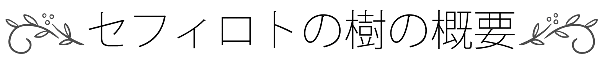
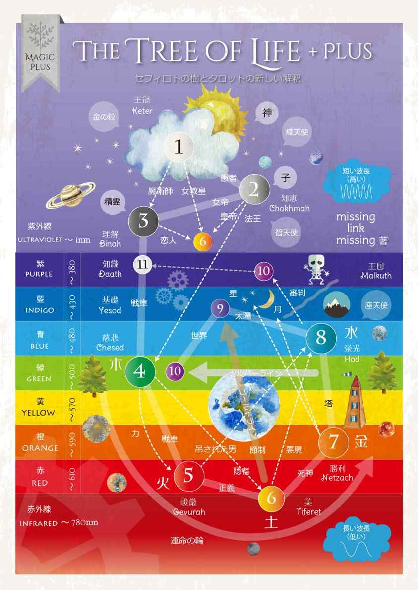
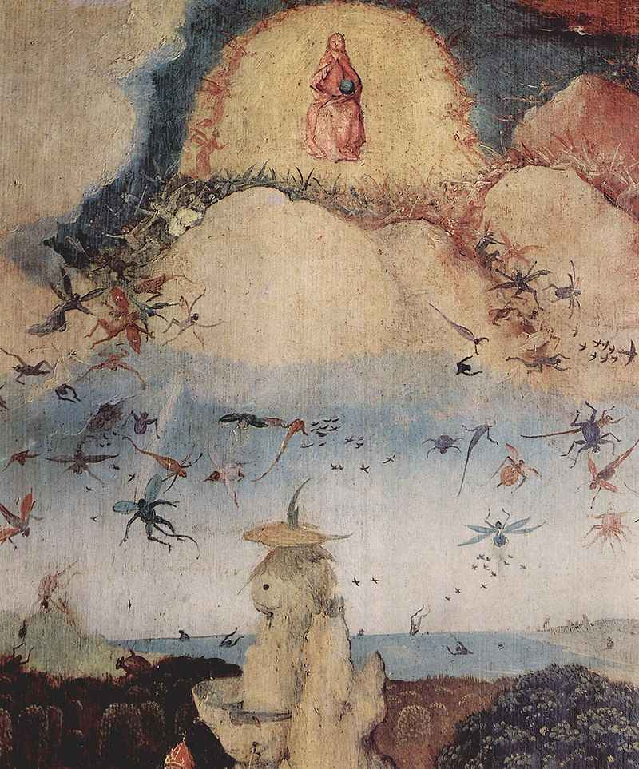
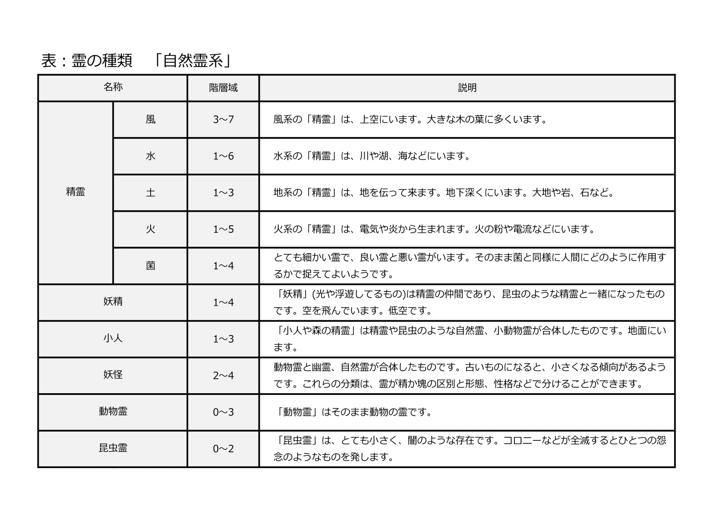
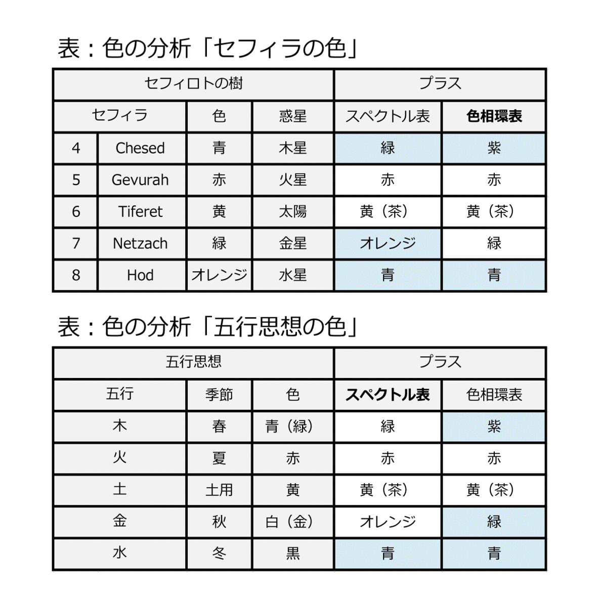

| カバラ思想セフィロトの樹プラス 第二版: タロットリーディング (神秘学プラス) | |
| missing link missing | |
| missing link missing (2016) | |
神秘主義思想であるカバラの「セフィロトの樹」の分析、および、新しい「セフィロトの樹」の解読方法の紹介です。
missing link missing著
私たちのまわりには、光があります。目の前には、物質の反射が見せる光景があり、光のみで構成される光景があります。神秘の光は美しく、癒しの対象であり、様々なインスピレーションを与えます。
幼い頃から光の共感覚があり、物質世界の他に光の粒や光の流れなどの光の世界が見えます。幼少の頃から光に興味を持ち、遊んでいました。未就園児の頃は、黒い人間、幼稚園の頃は、亡くなったばかりの動物の光が視え、消えていくのを見ました。明るくなると庭には光が輝き、野山で遊びました。暗い影、ベトベトの空間、サラサラと落ちる黒い粉や素早い影、走っていく黒いコロコロしたものを視てるのが大好きでした。幼稚園では、友達や先生のオーラを視たり、写真から過去を回想することができました。
万物が光輝き、光の川が流れ、空中に消えたり表れたりする光があります。光をながめていると、景色の中にもうひとつの景色があることに気づき、木が話しているのが聞こえてきます。自分自身が光っていることがわかり、光の世界の中に入ることができます。意識の中には、様々な不思議な世界が広がっています。
庭や部屋は、光と光景が一緒に視えるので、場所の広さや気の流れがわかります。感覚で捉える「広さ」とは、物理的な広さではなく、精神的な広さや瘴気のようなもので、雰囲気と同じであることがわかりました。行き先が決まると、明るい気配や悪い気配が迫ってきていることがわかります。悪い霊は、油の固まりのように見え、黒い闇やブラックホールのような物体も視えます。
神聖な場所には神聖なイメージがあり、壮大な景色をみると感動し、すべてが光に包まれているような気持ちがします。悲しいと明かりがひとつ消えたように暗くなり、部屋も狭くなります。汚い場所では、薄暗く、狭くなり、身動きができなくなり、美しいものを見ると、もっとよく見たいと引きつけられます。美しさに感動し、目が離せなくなるのは、光がキラキラと輝いているからです。怖くて身動きができなくなるのは、闇が迫っているからです。
神秘の世界には、心理学や精神の世界では表現しきれない、光の層が複数存在し、私達の生活に様々な影響を与えていることに気づきます。意識の中に広がる光の世界と外界にある光の世界の関係や作用など、観察しながらひとつづつ生活の中から研究してきました。その中でも最大の発見は、金の粒について理解したことです。インスピレーションは啓示です。金の粒からはじまり、プラトン哲学やケプラーの思想に助けられ、独自のイデアプラス論ができあがりました。
神秘は、誰もが同じように観察できないため、科学的な証明や説明は難しいですが、神秘の光を「光」や「波」と仮定し、光のスペクトルによる「カラーシステム」を用い、『カバラ思想セフィロトの樹』の新しい解読方法を紹介します。同じような神秘の感覚を持つ方たちや神秘学に興味のある方たちに共感してもらえればうれしいです。
本著の構成
本著は、神秘主義思想であるカバラの「セフィロトの樹」の分析、および、新しい「セフィロトの樹」の解読方法の紹介です。既存の思想と区別するため、オリジナルの神秘学を「神秘学プラス」、セフィロトの樹を「セフィロトの樹プラス」として、名称に「プラス」をつけて紹介します。
「第一章 セフィロトの樹」では、カバラ思想の概要、セフィロトの樹の構造について紹介しています。
「第二章 セフィロトの樹プラス」では、イデアプラスおよびセフィロトの樹プラスに至るまでの基本的な考え方を紹介します。「セフィロトの樹プラス」は、古代中国の自然哲学である五行思想の他、ドイツの詩人であり自然科学者であるゲーテによる色彩論、古代文明によって引き継がれる西洋占星術、古代ギリシアの哲学者プラトンのイデア論などの要素が含まれています。
「第三章 セフィロトの樹プラスの分析」では、イデアプラス理論を取り入れながら、さらにセフィロトの樹を読み解きます。
「第四章 神秘学プラス考察」では、旧約聖書『創世記』に記された「アダムとエバの物語」および新約聖書『ヨハネの黙示録』に記されている獣の数と言われる『６６６の謎』について、オリジナルの解読方法を紹介します。
資料について
「セフィロトの樹プラス」の紹介のため、関連する図や表を載せています。各事項には、種々の異説がありますが、諸説あるうちの一部を補足資料として作成しました。
カバラ思想のセフィロトの樹の体系図から、新しい体系図を作成しました。オリジナルの体系図には、関連付けられた象徴やタロットカードの大アルカナを記載していますので、タロットカードのリーディングに有効です。
Kindle 電子書籍 第二版 2016/7/6

神秘の世界は、曼荼羅に表現され、時には『木』で表現されます。旧約聖書に出てくる「生命の樹（Tree of Life）」、生命の樹から発展したカバラ思想の「セフィロトの樹（Sephirothic Tree）」、そして、北欧神話には、「ユグドラシル（Yggdrasill）」という木があります。ユグドラシルには様々な国が描かれ、霊界の様子がわかります。
北欧神話：ユグドラシル（世界樹）
生命の樹とは、ユダヤ教およびキリスト教の正典である旧約聖書『創世記』（２章９節以降）にエデンの園の中央に植えられた木のことを差し、生命の樹と呼ばれ、生命の木や命の木と言われています。生命の樹の実を食べると、神に等しき永遠の命を得るとされています。
創世記に記された『アダムとエバの物語』にある生命の樹は、ユダヤ教から生まれた神秘思想主義の「カバラ」によって、『セフィロトの樹』として体系化され、16世紀にほぼ現在の体系が完成しました。19世紀末には、イギリスで創設された神秘学結社の「黄金の夜明け団」では生命の樹をタロットカードと結びつけた研究が行われました。
この章では、「カバラ思想セフィロトの樹」や関連する情報について紹介します。
1. カバラ思想
カバラ（KABBALAH）とはユダヤ教の伝統に基づいた創造論、終末論、メシア論を伴う神秘主義思想で、「ユダヤカバラ」と「クリスチャンカバラ」にの二つに分類されます。
ユダヤカバラは、本来のカバラであり、ユダヤ教徒が旧約聖書の解釈に用います。クリスチャンカバラはユダヤカバラをキリスト教に応用するために考えられ、後に近代西洋魔術の理論的根拠になり、セフィロトの樹や数秘術が発展しました。
カバラは、ヘブライ語で「授けられる」ことを意味する「QUIBBEL」に由来し、口承から始まり、のちに文章で伝承されてきた教義を意味します。完全に理解するには、秘伝に精通した導師による指導が必要といわれ、魔術的な要素があります。
カバラには、２つの起源があり、ひとつは、ノアの洪水後の最初の預言者であるアブラハムが平和と正義を司る天使である力天使のメルキゼデクから伝授された天界の秘密であるとするもの、もうひとつは、紀元前13世紀ごろ活躍したとされる古代イスラエルの民族指導者であり予言者であるモーセが律法（トーラー）に記し切れなかった部分を口伝として後世に伝えたものとされています。
紀元前3000年頃に古代メソポタミアにて書かれた叙事詩「ギルガメッシュ」には、洪水についての記述があり、紀元前3000年～1300年の間に口伝されたことになります。その後、3～6世紀頃の『創造の書』から具体的に分析がされ、16世紀頃にほぼ現在の体系が完成しました。
セフィロトの樹は、秘伝として教義が伝承されてきたため、体系図の説明が多く、思想や哲学的な背景を重要視しした男性的な考え方が主流です。また、 多くの宗教の開祖が男性あることにも理由があり、儀式的を重んじた魔術を実践するのは男性となり、タロットカードなどを用いて感覚的な魔術を実践するのは女性になります。
詳しくは、「男性原理と女性原理」を参照ください。
1-1 代表的な３つの聖典
１. 創造の書
創造の書（セフェル・イェツィラー） 3～6世紀
モーセ五書の一つである創世記の中の宇宙論的解釈を背景として生まれた書物で、古代ヘブライの伝統に則り、宇宙の創造、ヘブライアルファベット、数を結びつけて書いてあります。２. 光明の書
光明の書（セフェル・バヒル） 12世紀
フランス南部に書かれたもので、生命の樹について書いてあります。３. 光輝の書
光輝の書（ゾーハル） 13世紀
カバラで最も重要な書物とされており、神の性質、神の名の秘密、人間の魂、その性質と運命、善と悪、トーラー（モーセ五書）の真義、メシア、救いなどについて書いてあります。
1-2 セフィロトの樹
カバラでは世界の創造を神アイン・ソフからの聖性の１０段階にわたる流出の過程と考え、最終的な形がこの物質世界であると解釈しています。神は｢セフィラ｣と呼ばれる光の球を放って宇宙を創造されたとしています。
セフィロトの樹は、１０個のセフィラがそれぞれが２２本の経路（小径）で繋がった構造となっており、このセフィロトの樹を解読することはこの世界のすべてを理解することだと言われています。
セフィラは『数』という意味になり、順番に解読していきます。セフィロトの樹はヘブライ文字の２２文字で書かれており、それぞれの文字が宇宙の原理となる要素を象徴しているといわれており、ヘブライ文字のアルファベットを解読することが重要な鍵とされています。
17世紀の天文学者であるケプラーは、「数学的表現としての数」と「抽象的意味の象徴としての数」は別のものとみなしました。
セフィロトの樹プラスでは、物質世界へ続く道（結果）はいくつか用意されており、第１ソフィアから流出したものは、すべてが数通りにはならないと読み取ることができるため、自然界の事象と数の神秘性ですべてが解決できるものではないと考えています。
図：セフィロトの樹「基本構造」
1-3 数秘術
聖書を解釈する際、「ゲマトリア」「ノタリコン」「テムラー」と呼ばれる暗号解読法を用いる場合があり、数秘学、数秘術と呼ばれる運命解読の方法に発展しました。
「ゲマトリア」は、ヘブライ語およびヘブライ文字の数秘術であり、聖書の言葉に隠された意味を読み解くことができる技法です。カバラ主義者は、ゲマトリアを使って、旧約聖書にある｢モーセ五書｣の解読を試みました。
「ノタリコン」は、文や単語の連なりの頭文字を取って新しい単語を作ったり、単語からもとの文や単語の連なりを復元する技法をいいます。
「テムラー」は、ある単語の中の文字を置き換えて、別の意味の単語を作るような技法をいいます。例えば、英語の「LIVE」（生きる・暮らす）の単語を並び替えると、「EVIL」（不道徳・悪）という単語になります。あわせて「文字の神秘」をご参照ください。
数秘術には「ピタゴラス式」や「カバラ式」があり、生年月日（西暦）や姓名から運勢傾向や先天的な宿命を占う方法です。
ヘブライ語では、アルファベットのことを｢アレフベート｣と呼びます。これは最初の 2文字、א（アレフ）と ב（ベート）からきています。また、｢アルファベット｣という言葉は、ギリシャ語のα（アルファ）とβ（ベータ）からきています。
アレフベートは全部で２２文字あり、ヘブライ語には英語のように大文字・小文字の区別はなく、覚えるのはこの２２文字のみになります。この２２文字の子音文字からなるヘブライ語には、それぞれ特定の数値が割り当てられおり、文字を数に変換することができます。
数秘術で使う名前や誕生日、日付に対応する数は簡単な計算で出すことができます。使用される数字は、1～9、11、22が主流ですが、33、44、55、を用いる場合もあります。
例えば、誕生数を出すには、西暦の各位の数、誕生月、日付を順に足していきます。西暦1234年の時は、1＋2＋3＋4とし、12月のときは、1＋2とします。答えが二ケタとなったら、その数をまた足していきます。名前も同じように数に置き換えることができ、アルファベットに割り当てられた数を計算します。
例：1234年12月1日のとき
(1＋2＋3＋4)+(1＋2)+1=14
1+4＝5
1-4 タロット
セフィロトの樹の小径（パス）に関係するものに、タロットがあります。19世紀末には、イギリスで創設された神秘学結社の「黄金の夜明け団」によって、タロットの大アルカナや占星学の象徴と対応した象徴体系が完成しました。
タロットのTAROとは、ROTAとなり、車輪という意味となり、タロットはヘブライ語のTorah（法律）やThRoA（門）のノタリコンとなります。
タロットは、１から１０までの『数札』と４枚の『人物札』をスートとし、ワンド（火・クラブ）、ソード（風・空気、剣、スペード）、カップ（水、ハート）、コイン（大地・硬貨、ダイヤ）の４スートで構成された５６枚の『小アルカナ』と、２２枚の『大アルカナ』の一組７８枚が一般的です。
タロットの起源は、はっきりわかっていませんが、14世紀頃に貴族によって美術的に重宝されたため、中世時代ではないかとされています。しかし、歴史を重ねるうちにいつの間にか、複雑で隠匿性の高かったセフィロトの樹と同じ体系になったとする『偶然説』は到底考えらず、古代文明における「占いの流行」や「天文学の発達」とともに、数や宗教と密接に関わってきたカバラ思想において『トランプの原型』が作られた可能性が高いと考えます。
セフィロトの樹のセフィラが１０であること、４つのスートが四大元素に割り当てられること、大アルカナがそのまま小径に割り当てられることから、偶然性は低く、絵や数字が一枚一枚に描かれ、区別できるカードは、多くの人にイマジネーションを与え、子供のごっこ遊びから賭け事まで、様々な娯楽に通じるものです。そこから神秘性が生まれた可能性は高く、数字が発達し、まじないや占星学が流行していた時代に、イメージを投影したカードまたは石版が存在しないと考えるのはとても不自然です。
現代では一年に春夏秋冬と４つの四季があることや１２ヶ月あることは当たり前ですが、太陰暦を採用していた時代もあり、一ヶ月が２８日で、一年が１３ヶ月であった時代もあります。（１３×２８=３６４日）その中で太陰暦の一ヶ月を陰陽に１４日に分類する可能性は充分に考えられるし、１スートの１４枚は大きな意味を持ちます。
私達もまた、カレンダーという概念がない時代に生きており、季節や星に神秘性を感じ、日々を分析しようとするなら、１日１日をひとつづつ数え、１０でくくることは当然であり、太陽や月、惑星の位置を１日のイメージに置き換える可能性は高いと思います。
さらに魔術に通じ、セフィロトの樹について知っていたのなら、研究の過程で小径に模したカードができるのは当然のことであり、アレイスター・クロウリーと同様にセフィロトの樹の発祥と同様に伝承されたと考えるのが妥当であり、古代起源が濃厚だと考えます。
2. セフィロトの樹
カバラ思想のセフィロトの樹には、隠されたセフィラを含めて１１個のセフィラという実と２２の小径（パス）という枝があり、セフィラと小径の意味、４つの世界、３つの柱、３つの三角形、２つの障壁について説明されています。
2-1 セフィラ
セフィラとは、ヘブライ語で「数」を意味しており、１１個のセフィラがあります。単数ではセフィラ、複数ではセフィロトといいます。物質化する流れを示しており、セフィロトの樹をセフィラを１から順にジグザグに下りていきます。ジグザグに下りていく様を蛇や稲妻と見立てます。
魂は『ネシャマー』『ルアク』『ネフェシュ』の３つに分類されます。最も神に近い至高の熱望をネシャマー、精神と理性を担当する部分をルアク、生命維持や動物的本能を担当する部分をネフェシュと呼びます。
セフィロトの樹プラスでは、第１セフィラにて『金の粒』ができ、第２セフィラにて『クリア』が金の粒を覆い、第３セフィラでひとつの魂になると考えています。
イェキダー
第１セフィラの『イェキダー』は、ヘブライ語でIChIDHと書き、「一」や「単一性」を意味します。自己の根元、神の火花、神性の閃きとされます。ここが『金の粒』の発現場所となります。
キアー
第２セフィラの『キアー』は、ヘブライ語でChIHと書き、「生命」を意味し、霊的意志となり第一セフィラで誕生した『金の粒』を包み込みます。この時点で『金の粒』は、銀の波長に包まれ、まるで卵のような形となります。キアーを星に喩えたのは、このまばゆい「金色の光」のせいだと考えられます。
ネシャマー
第３セフィラの『ネシャマー』は、ヘブライ語でNShMHと書き、「息」あるいは「魂」や「霊」を意味し、認識や知覚ができあがります。
ルアク
『ルアク』は、第４セフィラから第８セフィラに位置し、ヘブライ語でRVChと書き、「霊」あるいは「風」を意味します。『ルアク』のそれぞれの意味は、左右の柱にわかれ、右脳や左脳の働きに似ています。
第４から８セフィラの『ルアク』によって精神が構成され、第９セフィラで『エーテル体』ができ、魂を包み、第１０セフィラにおいて『肉体』に入る考えます。
『ルアク』や『ネフェシュ』などの分類は、流派によって様々で、第４セフィラから第９セフィラまでをルアクとする説や第９セフィラと第１０セフィラをネフェシュとするものがあります。
本著では、セフィロトの樹の流れを紐解くための「位置づけ」を重視し、第４・５・７・８セフィラは「精神を構成する各要素」、第６・９セフィラをそれらをまとめるものとして「エーテル体」、第１０セフィラをエーテル体を取り込む物としました。また、第１１セフィラを通り、第３セフィラのある創造界の位置が見えない世界となり、魂が収まる場所や精霊のいる場所となります。
具体的には、第４・５・７・８セフィラの「精神を構成する各要素」が第６（中心）・９セフィラ（エーテル体）によってまとめられ、第１０セフィラがそれらを取り込む身体となります。その他の第１・２・３が見えない世界であり、精霊たちの世界となります。
2-2 小径
セフィロトの樹の２２の枝は、小径またはパスと呼ばれ、ヘブライ文字や数字が割り当てられています。19世紀末には、イギリスで創設された神秘学結社の「黄金の夜明け団」によって、タロットの大アルカナや占星学の象徴と対応した象徴体系が完成しました。
図：小径（基本構造）
2-3 ４つの世界
セフィロトの樹は、４つの世界に分けられており、「精神的な要素」または「物理的な要素」が具現化する流れを表現しています。
１．アツィルト（流出界）
セフィロトの樹の上部の外側に果てしなき者・無限なる者である神である｢アイン・ソフ｣が位置し、そこから「精神的または物理的なもと」が流れ出します。セフィロトの樹の最上部（第１セフィラの「ケテル」）が崇高とされ、順に俗世（第１０セフィラの「マルクト」）へ続きます。
人間の魂の元型であり、すべての魂の源が存在します。アダムとエバの人間誕生の物語では、この位置で「人間のもと」が生まれます。カバラでは、神を理解しようと努めることで最下部のセフィロトから上昇していき、魂の源である「アダム・カドモン」の完全体を目指すことが目的とされています。
２．ベリアー（創造界）
第２セフィラ「コマー」と第３セフィラ「ビナー」の世界であり、創造の世界です。ここに神によって創られた「エデンの園」があります。無形のエネルギーである「アダム・カドモン」は、ここで無数の魂に分裂し、人間の姿をした形となります。
私の霊視では、創造界は見えない世界であり、階層ごとに精霊の場所、魂が集まる場所があると思われます。 審判の後、第１１セフィラを通り、創造界に至ります。創造界には、純粋な波動（精霊）があると思われます。精霊の波動は、魂をきれいにする役割があります。 純粋な波動は自然から発生するため、自然の力が大切になります。記憶がきれいになり、完全となったとき、新たな魂として物質界に下りていくことになります。
３．イェツィラー（形成界）
物語の展開があり、人間は男性と女性に分かれ、各セフィラにて、『ルアク』という「精神の機能」ができあがり、さまざまな個性に分かれていきます。各世界は、重なっており、「エデンの園」もこの世界にあります。聖書に登場するアダムとイブの世界は、この世界を描写したものとされています。セフィロトの樹プラスではさらに読み解いています。
４．アッシャー（物質界）
個性に分かれた存在はここで物質化し、肉体をまとい、産み落とされ、物理的な生活がはじまります。アッシャー界には人間が住み、同時に悪魔たちも共存しているとされています。カラーシステムでは、赤や茶の階層であり、地面の世界となります。
2-4 ３つの柱と３つの三角形
３つの柱
セフィロトの樹には、セフィラを縦に３つに分けた、３つの柱があります。左側が『峻厳の柱』。中央が『均衡の柱』、右側が『慈悲の柱』となります。３つの柱から構成される三角形は、右側と左側が真ん中にはたらく力でつり合いを保っているとされ、左右は、天秤のように比べる形であるとされます。右側が慈悲の柱が男性的であり能動的な意味、左側が女性的で受動的とされていますが、神秘学プラスでは、左側の柱は「形成するもの（形相）」、中央の柱は「バランス」、右側の柱は「原初の形作られるもの（質料）」、としています。
神秘学プラスでは、男女の区別はしないようにしています。詳しくは「男性原理と女性原理」をご参照ください。
３つの三角形
３つの三角形は、『至高の三角形』、『倫理的三角形』、『星幽的三角形』の３つがあり、上から順に下りていく形になります。
１. 至高の三角形
至高の三角形のロゴスとは、第１セフィラ、第２セフィラ、第３セフィラが構成する三角形です。ギリシャ語で言葉を意味し、概念、構想、思考などの意味を持ち、『知力や理性の三角形』になります。
２. 倫理的三角形
中央の倫理的三角形は、第４セフィラ、第５セフィラ、第６セフィラが構成する三角形です。「真理の探究」「客観的・中立」「自立・決意」など、『賢者の道を説く三角形』といえます。
３. 星幽的三角形
最後の星幽的三角形は、第７セフィラ、第８セフィラ、第９セフィラが構成する三角形です。星幽的三角形の「星幽」とは、アストラルという意味があり、『魔術的三角形』とものいわれます。
詳しくは、「三角形」の分析をご参照ください。
2-5 ２つの障壁
セフィロトの樹には、アビス（The Abyss）とパロケトのヴェール（The Veil）という障壁あります。
１. アビスの障壁
アビスは、形成界と無限世界との隔たりを意味します。通常の人間には、神秘の世界を認識・制御することは、ほぼ不可能だと考えられています。アビスより下の形成界によって作られた精神や肉体は、死によって消失し、知識や魂は死後も残ると考えられています。この障壁を司っているのが第１１セフィラ「知識」です。
２. パケトロのヴェール
パケトロのヴェールは、形成界のセフィロトの「ルアク（精神の機能）」を２段階に分けるもので、「記憶、意志、想像力」と「感情や思考」は別に機能すると解釈されています。
図：三角形と世界と深淵
概要
「セフィロトの樹プラス」は、カバラ思想のセフィロトの樹から生まれた新しい考え方です。古代中国の自然哲学である五行思想の他、ドイツの詩人であり自然科学者であるゲーテによる色彩論、古代文明によって引き継がれる西洋占星術、古代ギリシアの哲学者プラトンのイデア論などの要素が含まれています。
この章では、『セフィロトの樹プラス』の基本的な考え方や「カバラ思想セフィロトの樹」との違いなどを説明します。
「セフィロトの樹プラス概要」
１．流出過程・・・イデアプラスについて
２．生命のもと・・・金の粒について
３．光の階層システム・・・クリア
４．霊について
完成図は、セフィロトの樹を「カラーシステム」に取り込み、セフィラや小径、天体等の象徴、タロットの大アルカナなどを配置し、位置や季節、時間の相互関係がイメージで理解できるように作成しました。
例えば、右端に描かれた「塔」は秋から冬にかけての時期であることがひと目でわかり、季節の移り変わりとともに気温が下がり、実が腐り地に落ちる時期をイメージして頂ければ、塔から落ちる様がイメージできます。季節などを振り返りながら、人生を読み説いていただけたらと思います。
藍と紫の層では、第８セフィラから続く霊界の様子が描かれています。死後には、「審判」が行われること、象徴となる「山（山羊座）」、「川（水瓶座）」、「海（魚座）」、そして、大アルカナの「月」や「星」があることがわかります。
図：セフィロトの樹プラス完成図

1. 流出過程
セフィロトの樹プラスの根底に古代ギリシアの哲学者のプラトンのイデア論があります。プラトンは、『イデア』とは、「心の目」「魂の目」によって洞察される純粋な形、「ものごとの原型」、「現象の背後にある真の原因や真実在」であるとしています。
その後、古代ギリシアの哲学者アリストテレスの「形而上学」では、プラトンのイデア論から『質料』（ヒュレー）と『形相』（エイドス）という概念が生まれました。
質料は、「内容、素材」であり、形相は、「それを用いて作られた形」をいいます。
『セフィロトの樹プラスの流出過程』は、第１セフィラから現象の背後にある真の原因や真実在である「質料・形相のもと」である『金の粒』が流出し、第２セフィラの「質料」である『クリア』によって金の粒が満たされ、第３セフィラの「形相」によって形づくられると考えています。
『金の粒』は次項にて詳しく説明します。
『クリア』は、光の波をまとい色に変化すると考えており、①色の全く存在しないものを白または透明、②波動をまとったものを銀、または、グレーとし、③色が定着したもの黒と表現できると考えています。
『イデアプラス』では、イデアの「現象の背後にある真の原因や真実在」が神の世界であると考えており、質料や形相ができる前の「見えないもと」であると考えています。つまり、イデアプラスは、形相や原型そのものではなく、『形相・原型・真の姿のもと＝質料』のことです。
そして、「現象の背後にある真の原因や真実在」「質料」「形相」という流れが「至高の世界」になります。
イデアは原型であり、イデアプラスは「形相・原型・真の姿となるもと」となります。物質世界の原型と混同されることを懸念し、プラトンのイデア論にプラスを付けて区別しています。
『イデアプラスの曼荼羅』には、銀色の聖なる道である「シルバーライン」と、金色の生命の道である「ゴールドライン」があります。
2. 生命のもと
『セフィロトの樹プラス』では、第１セフィラから「質料・形相のもと」となる『金の粒』が流出し、第２セフィラの「質料」である『クリア』によって光の波がおおい、第３セフィラの「形相」によって形づくられると考えています。
第１セフィラから流出したと考える『金の粒』の発見と分析について紹介します。
2-1 精霊ができるまで
小学生の頃、植物を眺めていると、金の粒が突然発現することに気づきました。金の粒は、オーラとは違い、突然20～30cmくらいの距離を放射線状に飛び出してきます。金の粒はなかなか発現しないのですが、金の粒が出たあとは、精霊がたくさん生まれ、妖精となり増えていきます。
場所やタイミングが不確定だったため、何度も試しました。例えば、植物の場合は、次のような時に金の粒ができます。
『金の粒の発現のしかた』
（１） 植物にキレイと好意を伝えます。
（２） 植物が反応し、癒しの気を出します。
（３） しばらくすると金の粒が生まれます。
その後、金の粒は、植物に限らず、『バランスのとれた場所』『美しいと感じる心』『新しい発見』から出現することがわかりました。つまり、「調和・美・誕生」です。この金の粒の発現場所やタイミングは、アフロディーテーやビーナス、金星と関係していることがわかり、占星学から、宵の明星と明けの明星に意味があることがわかりました。アフロデーテは誕生や性に関係しています。バランスのよいところから生まれる金の粒は「生命の可能性」があります。
木、石、身に付けている物などに「こころ」が入ることは、広く知られており、物に遺された思念から過去をリーディングする（透視）能力も存在しています。
「物にこころが入る原理」を利用したものには、依り代、お墓、パワーストーンなどがありまりす。また、霊とは、さまざまな種類の霊が融合してできていることがわかりました。その原理を考えるうちに、金の粒とは、霊のそもそもの核であり、「魂の核」ではないかと考えました。
つまり、金の粒ができ、波動が生まれ、精霊が入り込み、妖精となります。
金の粒からできた妖精は、人物を『守る効果』があり、危険がくると身を焼いて守ってくれることがわかりました。人を守るとは、守護であり、『天使』となります。天使は悪魔と戦ったり、悪魔払いの時に、葉が焼け焦げるされています。金の粒からできた妖精や天使は、旧約聖書で予言者がみた天使であることがわかりました。
『金の粒の発現場所』
絶景地や庭などの美しい光景、植物、水辺、岩
『金の粒の発現するタイミング』
（１）アイデアが生まれたとき（明けの明星）
（２）美しいと思ったとき（宵の明星）
2-2 生命誕生の可能性
金の粒は、「霊を構成する核」であり、「魂のたまご」の可能性があります。金の粒の発現するタイミングは愛の調和であり、聖書で伝えられる「愛から生まれた」に符合します。金の粒が生命誕生に関係するのであれば、人間誕生を扱う『カバラ思想のセフィロトの樹』でも説明できると考えました。
金の粒の観察される状況は、スムーズにセフィロトの樹の体系図に当てはまりました。第１セフィラで金の粒ができ、第２セフィラで波動が生まれ、第３セフィラで形相されます。
金の粒から生命が誕生できると仮定すると、環境が整った瞬間に偶然『金の粒』が発現し、地球の精（『クリア』＝光）と融合後、核となり、菌のような小さな生命ができる可能性も考えられます。劣悪の状況であった地球初期の時代にあっても存在できる生命が誕生する可能性が考えられ、メタン菌を起源とする進化説の可能性が見えてきます。
霊を「波」と仮定した場合、調和している波とは、閉曲線上にできあがる「定常波」です。定常波とは、波長・周期（振動数または周波数）・振幅・速さ（速度の絶対値）が同じで進行方向が互いに逆向きの2つの波が重なり合うことによってできます。閉曲線上で定常波ができた場合は、図のような形になります。その他の定常波による現象には、共振現象や共鳴現象があります。
図：定常波
生まれたばかりの赤ちゃんは、たくさんの気を吸います。亡くなった方は、身体から気のかたまりが出てきた後に、光を放出します。生まれた魂は、「気」と表現される波動を取り込み、気質となり、亡くなった魂は、浄化といわれる過程の中で不要な波動をすべて取り払い、生まれ変わると考えています。
『カバラ思想のセフィロトの樹』は、定常波ができ、魂として物質界に誕生するまでの過程を説明することができます。
2-3 錬金術と金
生命誕生との関係を考えていくと、１６世紀に流行した金の精製と永遠の命を求めた錬金術を思い出します。古代から現代までの神秘主義者が全く金の粒の発現について知らないわけがなく、カバラ思想においても、なんらかの秘密を解いていたに違いありません。
ジパングに大量の金があることを夢見た大航海時代があったように、金と命の誕生がウワサとなり、金を精製しようとした者たちが出てきたのだと想像します。
中世の錬金術を伝える絵には、ビーカーに入れられた天使や焼かれている精霊たちの絵がたくさん残っています。しかし、金の粒は、強欲な人達の目の前には現れませんでした。そして、その秘密を明かされることはありませんでした。
図：錬金術の本の挿絵「蒸留している様子」
神秘学プラス的に説明すると、「自然の恵みの癒し」「自然の循環」となる精霊は植物的となり、「思考すること」「金を求めること」「永遠の命を求めこと」は動物的だからです。
動物的思考は、精霊を焼き尽くします。視点を変えて表現するなら、動物的思考は、考えることによって植物的な要素を消化してしまうため植物的な発想を打ち消してしまうことに繋がります。これは、生物に不可欠な酸素と二酸化炭素の関係と同じです。また、植物的な思考からすると、動物的な思考は、神秘的なものを「踏みつける」「痛めつける」または「殺してしまう」と忌み嫌われるため、当時、妖精や天使などの秘密は誰にも明かすことはできなかっただろうと想像します。
このように、動物的信仰と植物的信仰は相反するものとなります。※「自然霊と動物霊」参照
2-4 ホムンクルス
上図は、１９世紀のドイツの詩人であり自然科学者であるヨハン・ヴォルフガング・フォン・ゲーテによる戯曲『ファウスト』第二部における「ホムンクルスを作り出す錬金術師」です。
ホムンクルス（Homunculus・小人）とは、ヨーロッパの錬金術師が作り出す人造人間、及び作り出す技術のことです。錬金術師パラケルススは、四大精霊の研究過程から人造人間のホムンクルスを作れると考えたのだと思われます。作る過程が植物と動物の誕生を融合させたようなものとなっています。
2-5 生物の構造
後の項で詳しく解説がありますが、セフィロトの樹の体系図の各セフィラが象徴する「木星・火星・金星・水星」の４つの惑星は、『春夏秋冬』の四季となり、残りの土星と月は入口と出口になることがわかります。生物でいうと、胚発生における原腸の原口と同じであり、その後に内臓ができるという、生物の単純な構造ともいえます。
面白いことに、個々のセフィラは、人間や動物の「脳、目や口などの五官、首、内臓、肛門、脚」と同じ位置や役割として置き換えることができ、小径の割り当てられた星座からも、占星学によって割り振られた生物の器官があり、対応することがわかります。また、インドにおいても神秘学の文化が発展し、現代のヨーガ教本やレイキなどによって各チャクラの色が身体に割り当てられており、古代文明からインスピレーションを受けた文化は、同じような展開となることがわかります。>> ※表参照
セフィロトの樹とは、見えない光が物質化するまでの過程を表現したものであり、生命をコントロールする意識そのものが光で構成されると仮定すれば、生物は光を求めて少しづつ進化してきたのだから、物理的に地球上にもたらされる太陽の光によって進化した生命体とセフィロトの樹の仕組みが合致するのは当然であり、これらの神秘学の研究は、地球生命体の進化の流れを知る上で必要な学問だと考えます。
図：オランダの科学者ハルトゼーカー （Nicolas Hartsoeker) が唱えた精子の姿（1695）。中にホムンクルスが入っている
2-6 お願い
霊の中には、怨霊（恨みの念）があり、例えば虫が大量死すると、黒い闇が表れ、その後、大地に染み込んでいきます。これらは、地の霊となることがわかりました。大きくなれば、妖怪などに生まれ変わります。身の回りには、恐い霊もいますが、精霊や高い霊がいます。
過去に、自分自身の中の恐怖心から多くの悪霊を呼び寄せてしまい、妖精や天使を一度に焼き殺してしまう体験を何度かしました。妖精や天使、神とされる精霊は、私達を守護してくれますが、悪が勝る場合は死んでしまいます。

絵：ヒエロニムス・ボス「エデンの園（上部）」
プラド美術館
錬金術が流行したときも、カバラ思想が世に出ても、究極の秘密は語られません。それは、「守るべきものがあるから」です。「光に守られるのではなく、人間として強くなり、守る側でいたい」と思い、私自身も精霊や妖精の作り方は禁じ手としていました。
多くの精霊や霊が私に開示を求めます。現代の世において、宗教や思想に惑わされないためにも、神秘の正しい知識をたくさんの人に知ってほしいと思っています。
光に守られたい人は、同時に強くなってください。新たな真実も本著に記します。>>秘密の小径
3. 光の階層システム
カバラ思想のセフィロトの樹は、セフィラという球体を順に巡っていき、物質化する流れを読み解きます。セフィロトの樹プラスでは、セフィロトの樹の体系図をカラーシステムの中に組み込み、分析しました。
私達人間は、人生を歩みながら『光の階層』を順番に体験していると考えています。オリジナル体系図には、精神的または物理的なもとが流れ出し、物質化する過程の他、精神が構成される活動の世界、霊界までの道筋が表現されています。
神秘の世界には様々な層があります。簡単に言うと、明るくて高貴な畏れ多い神の世界と暗くて怖い惨めでドロドロしたお化けの世界です。その他にも清々しい世界やワクワクする楽しい世界、怒りの世界など様々な世界があります。
神秘学プラスには、光の世界や霊を説明するときに用いる「光の階層システム」があります。色について説明しているため、「カラーシステム」と呼んでいます。
3-1 カラーシステム
神秘の世界を表現する「カラーシステム」は、大きく二種類あり、ひとつは、色のスペクトルが垂直にならんだ『スペクトル表』、もうひとつは、色が輪にならんだ『色相環表』で表現されています。
図：イメージを表す色相環表
本著のセフィロトの樹プラスは、主に『スペクトル表』を用います。五行思想の五行や形成界の回転は『色相環表』で表されます。
本著に掲載されている カラーシステム一覧
図：カラーシステム「階層システム」
図：カラーシステム「セフィラ・五行・天使の色」
図：カラーシステム「五行思想」
図：セフィロトの樹「完成図（カラー図）」
3-2 階層
色や音とは、『波長』です。
霊のレベルである「霊格」や「階層」は、色や数字で分けることができ、白、透明、銀など、色をすべて反射するものが高く、黒に代表されるように色が混ざっているものが低くなります。階層は、色のスペクトルと同様に赤、オレンジ、黄、緑、青（青緑）、藍、紫の７つの階層があり、それぞれ特徴があります。階層によって、性格や性質も異なってきます。
光の階層
光は、季節ごと、時間ごとに色の階層が変わっています。一日は、昼と夜の２回スペクトルが変わり、季節は一回のスペクトルとなります。通常は、スペクトルと同じように色を順に経験しますが、季節や時間は回転しているため、比較する場合は、色相環で分析することができます。
図：一日を表すスペクトル表
「イデアプラス」では、情報をもつ光のことを『クリア』といいます。「セフィロトの樹プラス」の第１セフィラから『金の粒』が流出し、『クリア』が光の波をまとい、光の階層を経験すると考えています。
霊の階層
霊とは、『セフィロトの樹』の第１０セフィラを通過した、すでに地上に生まれたものになります。霊とは、セフィロトの樹を経験し、第１０セフィラの王国に到達したものであり、すでに光の情報を持っているものです。肉体に収まっているもの、肉体から離れ、肉体をもたないものがあります。イデアプラスは、光の層と霊の層の相互関係を研究しています。
「黄色は色の中心」であり、人間の標準となる位置になります。黄色の階層は３階層となり、階層の中央になります。赤、オレンジ、黄色、緑、青の５つの色が活動界となり、宗教上の神は藍の６階層になり、天や高貴な階層は、７階層の紫となり、それ以上は宇宙的な空間となります。「玄」と表現されるときもあります。
色は電磁波の波長であり、人間の可視光線の中央が黄色であることや、人間の錐体細胞による色覚の色の情報の受け取り方や交感神経に直結していることからも、「黄色」が私達人間に、重要な役割を持っていることがわかります。
音の音波は神秘の光の波長に影響を与え、同様に高音が高く、低音が低くなります。古代の音階といわれている「ソルフェジオ周波数」の周波数によって霊とつながりやすくなると言われており、また、心の音を変えることで霊と波長を合わせやすくなります。
セフィロトの樹プラスを経験し、生まれた霊は、形成界を回転します。霊の階層は、霊格やレベルとして人を区別するとされていますが、太陽の光が地表に順にあたるように、人間は、標準の黄色を中心に１～５階層を順に巡っていると考えられます。
肉体の死を迎えるとき、新たに第９セフィラを通過することになります。霊界へ続く道は４つあるとされており、光の美しさによって最終的な審判が下されます。
図：カラーシステム「階層システム」
4. 霊について
4-1 霊の基本
光を観察していると、暗い光を放つもの、眩しい光を放つものがあります。神秘の世界にも一定のルールがあり、消えたり、大きくなったりと変化していることがわかります。私達に影響を与える光が存在し、一般的に霊やスピリットと呼ばれています。
霊は、波長などの「波」で表現され、高級か低級かは波長や周波数で分けられた階層などで区別します。霊が現在把握されている物質であるとするなら「光」です。しかし、光以外の波長、例えば「音の波」も神秘に影響があるため、「波」そのものである可能性もあります。本著では、霊を「光」と仮定し、カラーシステムの中で説明しています。
私達が見える光を可視光線といい、眼球で受けた光を測り、脳に信号が送られ、脳で映像として処理されます。また、光は目だけが感じるものではありません。肌も光を感じ、影響を与えます。現代では医学においても光は重要な役割を果たします。光は、生物の進化に欠かせないものです。
光には、情報を記憶する性質があり、特に過去の記憶のことを「残留思念」といいます。神秘の光を感じる感覚が「霊感」、扱える能力が「霊能力」となります。
霊とは、セフィロトの樹を経験し、第１０セフィラの王国に到達したものであり、すでに光の情報を持っているものです。その中で、人間の霊とは、知識を持った霊といえます。セフィロトの樹は「霊が知識を持つまでの流れ」、アダムとエバの物語は「知識を持つ人間が誕生する物語」といえます。
スピリット
霊とは、英語でスピリット（Spirit）といい、元はラテン語の spiritus （息、呼吸、魂、勇気、活気などの意）に由来し、古典ギリシャ語の πνευμα （プネウマ、動詞「吹く」希：πνεω を語源とし、大いなるものの息の意）、ヘブライ語のרוח （ルーアハ）に相当します。
オーラ
万物にオーラがあります。東洋では、「気」と表現します。例えば、石があり、その周りは光で覆われています。いくつに割っても、まわりにはオーラがあります。物と物の中間にあるものを「エーテル」などと表現することもあります。
多くの神秘学思想では、生命のみがオーラを発しているとありますが、万物にオーラがあります。多くの霊能者は、人間を含めた動物に力を発揮する人が多いため、魂（黄色）を中心にした文化が強く反映した結果となります。
万物は光の反射層で覆われ、そこに生物の魂や自然の精霊が入ります。光の層は、常時、外界の光と相互作用しています。これが原点であり、基本です。
4-2 霊の性質
簡単に性質を区分すると、「さらさら」と「ねばねば」です。「ねばねば」の霊は、くっつく性質（融合）があり、大きくなります。融合した霊は、特徴によって様々な種類にわけられています。また、「さらさら」の霊は、くっついた霊を分解する働きがあります。
「さらさら」は、上に位置する霊となり、短い波長です。キラキラして視えます。軽くさらさらしているので、空にいます。
「ねばねば」は、下に位置する霊となり、長い波長です。ネバネバしており、霊同士が融合し、重く動きが鈍く、地面にいます。
高い霊「さらさら」
高い霊は、高級霊と呼ばれ、波長が短く、周波数が高いです。性質はさらさら。光や色でいうと紫外線や紫。光や色のイメージも高貴や高いという意味。高級霊は神様などで、自由度があり、管理する霊がいます。紫外線は、英語ではultravioletといい、「紫より上にある」「紫より高い」を意味します。精霊は、どろどろの霊を分解する性質もあります。高い音でも表現されます。低い霊とは反対に、宇宙に近い霊です。
低い霊「ねばねば」
低い霊は、低級霊と呼ばれ、波長が長く、周波数が低いです。性質はどろどろ、ねばねば。光や色でいうと、赤外線などの赤や黒であり、幽霊などをいいます。赤外線は、英語ではinfraredといい、「赤より下にある」「赤より低い」を意味します。赤外線は熱源として使われることがあり、低い霊の黒は、物質が焼けた色、黒体放射などをイメージするとわかりやすいかもしれません。霊はくっつく（融合する）性質があり、低い波はくっついた状態が高いことを示しています。自由度が低く、音も低く表現されます。物質（地面）にとても近い霊です。
4-3 霊の特徴
神に例えられる高い霊は、人間によく働き、闇（怨霊）のような低い霊は、人間によく働きません。生物の種の恨みは、大きな黒い塊となります。
人を否定したり、相手に自分の考えを押し付けるようになったら、思想に固執してる（＝気持ちが固まっている）ことが考えられます。学歴、生き方、成果がすべてと思ってる人も同じです。考え方や思想が自由になれないのが特徴です。
融合・・大きくなる
同じ波長が干渉し大きくなるように、霊は、同じ性質同士が合体します。また、同じ性質の 人間がいると憑きます。取り憑く性質は、悪い霊の特有の性質ではありません。
消滅・・消える
霊は、波長の山と山、谷と谷が合うと打ち消し合うように、霊の悩みを解決すると残留思念は消滅します。
通信
霊と連絡を取ることができます。方法は、（１） 周波数を合わせる （２） 霊界に行き来できる霊媒する霊を通してコンタクトを取るなどです。
黄色は、『人間の標準位置』となり、ほとんどの方はここに位置しています。身近で守ってくれる神様は、この位置よりも上にいます。宗教の神様は６階層の位置になります。
『信じる』ということは、「合わせる」ことです。神を信じることで、周波数を合わせることができます。また、「こころ」の軽さ、重さで周波数が変わり、日常の行いが真理とあっていれば、祈りが通じるということになります。
4-4 霊の種類
ここでは、霊界の視えない霊の種類について説明します。霊は、融合する性質があるため、さまざまな霊が生まれます。細かい霊であり、高い階層の霊を「精霊や神霊」、塊（かたまり）の霊であり、低い階層の霊を「幽霊、心霊」といいます。※数字は階層域です。

1. 色の分析
この章では、カバラ思想の「セフィロトの樹」を分解、分析し、さらに理解を深めるとともに、『セフィロトの樹プラス』ができるまでを解説します。
1-1 セフィラの色
本著では、神秘の流れを詳細に研究するため、色に分類して説明しています。セフィロトの樹プラスでは、「カラーサイクル」を用いて、新たにセフィラの色を設定しました。
色の設定には二通あり、色のスペクトルを直線で表現した「スペクトル表」、色相環で表現した「色相環表」があります。物質が形成されていない過程は「スペクトル表」、物質世界の過程は「色相環」で表現されると考えています。

色の分析表から、カバラ思想のセフィロトの樹の色は、「色相環表」に近く、五行思想の色は「スペクトル表」に近いことがわかります。特徴的なのは、赤と黄が統一されていることです。
夏は暑く赤でイメージされることは、世界共通になります。また、中央の神秘的な位置が黄色であることは、神秘学で共通されることです。また、緑と青は三原色から青緑として説明されることがあります。
1-2 五行思想の色
五行思想では、中国で金色が特別な色として扱われるため、白として表現しています。つまり、白ではなく、「金（秋）」の色は『金色』となります。この『金色』をさらに読み解くと、金の色とは、金属光沢による黄色の反射となります。つまり、金属が反射した時に得られるキラキラした黄色という意味です。
古代中国の五行思想では黒を玄とし、深い宇宙の色を表現しました。「水（冬）」は、天の色の玄（黒）とされています。第3セフィラは黒であり、五行思想と同じ玄です。第３セフィラの宇宙を表現したために玄となったのだと思われます。神秘学プラスでは、純粋に水の色として「青」としています。
五行思想は、循環や相生・相克を表現していることから直線的な色を用い、セフィロトの樹は、ジグザクに下りてくることと回転していることを同時に表現するために、このような色の配置になったのではないかと考えます。つまり、ひとつの曼荼羅ですべての事象を表現しようとしたため、このような色の組み合わせとなったのだと想像します。
神秘学プラスでは、五行思想の「金」は秋の色として『オレンジ』に、五行思想の「水」は天上の黒（第３セフィラ）と区別し、『青』になります。以後の説明から、セフィラの色は「セフィロトの樹プラス」の色で説明します。
1-3 天使の色
イデアプラスでは、波動であり、情報を保つ性質のある「クリア」は透明だと考えています。その中で、聖なる色として、全色を反射する銀色や白があり、情報が古くなったものは、くすんだ色となり、いぶし銀となると考えています。
イデアプラスでは、「熾天使セラフィム」は、流出する生命のもとであるので、金色、聖なる波動であり、「智天使ケルビム」は銀色、「堕天使ルシファ―」は、智天使が落ちたものであり、いぶし銀色だと考えています。また、形成界を司る座天使スローンズは赤～オレンジ色で、回転などを司ります。
図：カラーシステム「セフィラ・五行・天使の色」
1-4 黄色について
第６セフィラや第９セフィラの色が黄色であったり茶色であるときがあります。これは、色の特徴と同じように黄色が他の色と混ざった色が茶色であるという意味であり、物質に近いことを意味しています。また、歴史や情報を多く含んでいることを意味しています。
「金色」は、金属光沢の黄色であり、神聖な黄色を「金色」、標準の色を「黄色」、物質に近い色を「茶色」としています。
五行思想では、五行の「土」を「土用」として季節の途中に入れたり、方位や季節とは別に曼荼羅の中央に置くことで解決しています。中央の柱の黄色（６）は、螺旋状に円を描き、途中、途中に重なるため、獣の数「６６６」のような配列となります。また、数々の分析から、回転の軸はオレンジ色であると言われています。
詳しくは、「獣の数」の項をご参照ください。
2. 三角形
解説図：セフィロトの樹「３つの三角形」
2-1 三角形のつながり
１．『至高の三角形』から『倫理的三角形』に続く道
『至高の三角形』と『倫理的三角形』は、「モラルや好奇心」でつながり、『至高の三角形』の恩恵から知識を深めることによって、『倫理的三角形』に向かうことがわかります。
２．『倫理的三角形』から『星幽的三角形』に続く道
『倫理的三角形』から『星幽的三角形』続く小径は、「吊るされた男」であり、「修行」によって、『星幽的三角形』に下りていくことを示しています。
第４セフィラから第７セフィラに続く「運命の輪」による大きな力によって、運命的に『星幽的三角形』へ続く道も準備されており、『星幽的三角形』でのバランスが今後の人生を左右します。いづれにしても避けて通れない道でのため、こころの準備が必要になります。
３．『星幽的三角形』から物質界に続く道
『星幽的三角形』から物質界に続く道はとても険しく、以下の４つの道が準備されています。
１．第８セフィラから「太陽」を通る『未来の道』
２．第７セフィラから「星」を通る『希望の道』
３．第７セフィラから「月」を通る『不安の道』
４．第８セフィラから「審判」を通る『審判の道』第１０セフィラは、『終着点』を意味しており、精神世界であれば、物質世界から抜け出し、精神世界が誕生するまで、物質世界に置き換えれば、物理的な死（精神世界に生まれることになる）になります。
『不安の道』と『審判の道』は、「神の判断」に委ねられることがわかります。ここが一般的に知られる『死後の世界』です。
『不安の道』は、夢見る世界となり、浄化によって再生へ続きます。通常は、精霊の世界によって浄化されますが、この状態が停滞すると、浮遊霊や残留思念の状態となり、魂の浄化も遅れます。現代はここがとても停滞しているため問題が起こっています。
『審判の道』は、審判によって拒絶された場合は、王国で幽閉されることを意味し、幽霊となることを意味すると考えられます。
４．『星幽的三角形』から『至高の三角形』に続く道
『星幽的三角形』から物質界に続く道の後、『至高の三角形』に続く道があり、第１１セフィラを通る道があります。第１１セフィラ「ダアト」の『知識』とは、神的な絶対的な知識と対照的な意味を持ち、概念上の知識という意味があります。第１１セフィラ「ダアト」にて「光の知識」があると、天界に行くことができます。
この地点には、「アビスの障壁」があり、神の世界を理解した人しかわからないことになっており、「光の（霊的な）知識」がない人は停滞することになります。
「アビスの障壁」とは、魔術的な修行の中で習得することが難しいと言われています。つまり、霊能者や霊の管理者または指導者が死者に情報を渡す（知識を与える）ことによって、冥界に送ることができることも示しています。
現実世界では、霊能力のような技術がないと霊と交信し、霊に知識を与えることはできないため、霊を光（神の世界）へ送る技術がある人（霊能者）しかわからないという意味となります。臨死体験にて、亡くなった方が迎えにくるというイメージはここからだと思われます。
『完成図』では、藍色の領域になります。この部分を多くの方が理解していないのではないかと思われます。
2-2 三角形のバランス
セフィロトの樹の『至高の三角形』と『星幽的三角形』の三角形の中央に、バランスを象徴する「第６セフィラ」を入れると、２つの三角形ができます。こうすることによって、第６セフィラが示す「均衡」をより深く理解することができます。これをここでは『小さな三角形』と『大きな三角形』呼びます。この２つの三角形の意味を紐解くことは、タロットカードの解読に役に立ちます。
１．小さな三角形
『至高の三角形』の内側にできる第２セフィラ、第３セフィラ、第６セフィラの『小さな三角形』です。基本的な体系では、『至高の三角形』よりも大きな二等辺三角形になります。『至高の三角形』のある無限世界から、第６セフィラへ続く小径があり、精神世界に「学び・喜び・自信」の力を与えていることがわかります。
２．大きな三角形
『星幽的三角形』の外側にできる第７セフィラ、第８セフィラ、第９セフィラの『大きな三角形』の関係です。『星幽的三角形』は、大アルカナの「死神」「悪魔」「塔」で構成され、「欲望」「停滞」「無」の意味となる精神的にとても厳しい三角形です。第７セフィラ、第８セフィラ、第９セフィラの『大きな三角形』は、この厳しい環境の『星幽的三角形』を克服するための三角形です。
「節制」は、『星幽的三角形』を克服するための支えとなる杖であり、木でいうと幹の部分になります。第６セフィラ「美・バランス」を意味するこころの中に、厳しい環境に打ち勝つ一本の太い幹を作ることで、大アルカナ「節制」となり、外側の『大きな三角形』の頂点である第９セフィラへ向かう道となり、「未来」「希望」となることがわかります。
「ツリー図（濃い茶色の三角の部分）」や「タロットと象徴の解読」の日の当たらない場所や夕日の記述を参照するとよくわかるかと思います。
3. 回転
3-1 惑星
古代よりカバラ思想の中では、秘伝として伝承されていたとは思いますが、「形成界」は回転しています。ただし、運命の輪として回転していることは理解していても、現在の魔術的な解説書にどこがどのように回転しているのか言及しているものはありません。
古代の遺跡には、様々な曼荼羅や回転している図があります。例えば、土星から→木星→火星→太陽→金星→水星→月と７曜に回転してる図があり、これらの惑星が７曜の考え方となり、一週間となったことに間違いはありません。
しかし、詳しくセフィロトの樹の体系図の意味を読み解いていくと、７曜ではなく、太陽を中心とした軸に木星→火星→金星→水星→土星と回転していることがわかります。※中央に位置する第６セフィラの太陽は、実際は地球でもあり、月でもあります。セフィロトの樹からは第１セフィラも含まれます。これも『６６６』の謎のひとつでもあります。
3-2 回転のしくみ
『創造界』から流れ出た力が、大アルカナの「力」や「戦車」に流れ込み、回転に力を加えていることや、「運命の輪」「吊るされた男」が遠心力を表現していることがわかります。さらに、セフィロトの樹の小径と関係のあるタロットの『TARO』とは、「テムラー」により解読すると『ROTA＝車輪』となり、すべては回転していることを示しています。
図：回転する「形成の世界」
3-3 五行思想との融合
セフィロトの樹プラスでは、五行思想を加えて研究しています。
図の通り、第６セフィラは五行思想の「土」であり、中央に位置します。第４セフィラは、五行思想の「木」であり「春」を意味し、第５セフィラは「火」であり「夏」、第７セフィラは「金」であり「秋」、第８セフィラは「水」であり「冬」となります。
下の図には２つの図があり、上の図は、従来のセフィロトの樹の体系図となり、下の図は、セフィラがスペクトル上を移動し、回転している様を描いています。第４セフィラは、青から緑に、第７セフィラは、緑からオレンジに変更しています。
さらに分析を加えたカラーシステムでは、第７セフィラから第８セフィラの小径「塔」の途中で緑色となり、向かい合う第４セフィラとをつないだ「緑色の道」があることがわかっています。この緑色の道は「イデアプラス」では重要なラインとなり、神聖な光の道である『シルバーライン』と呼んでいます。※図参照
物質世界では、第１０セフィラの地点が「１」となり順番に進むと、物質世界の「６」と物質化される原因となる 形成界の第６セフィラの「６」と物質世界を形成の世界とを結ぶ中央の「６」が３つ重なり、６６６となります。この ６６６が人間の神秘を意味する『獣の数』となります。この黄色の道は、『鬼門』であり、「イデアプラス」では、『ゴールドライン』と呼んでいます。螺旋状に数の順に進み、第６セフィラの位置で調和となった場合に門が開き、中央に向かいます。
解説図：五行・季節の変換図
3-4 座天使スローンズ
第三位の天使である座天使スローンズは、「玉座」や「車輪」を持ち、回転する形成界を司ると考えています。「神たる主の戦車を運ぶ者」とされていることから、位置は、第３セフィラから第５セフィラの間であると考えます。
古代から中世にかけては、「車輪」と霊視されることが多かったのですが、近代では、「ホイール」や「オレンジ色の光」に視えるという霊視報告が多く、時代とともに「軸」の像が変わってくるようです。UFOなどもスローンズを霊視したものだと言われています。
同様に、座天使スローンズは、「意思の支配者（Lords of Will）」と呼ばれ、セフィロトの樹の「ルアク」を管轄すると考えます。
3-5 螺旋
象徴には、古代ギリシア哲学の「風」「土」「水」「火」の『四大元素』、 エーテルが含まれた「火・水・地・空気・エーテル」の『五大元素』、 仏教の「地」「水」「火」「風」「空」の五大や「識」を加えた『六大』、 道教の「木」「火」「土」「金」「水」の五行思想や陰陽道の『五行の相生・相克』、 パラケルススの「塩」「水銀」「硫黄」の三元素説など、 様々な研究があります。それらはすべて自然からの教えです。 世界が数できれいに分けられないこと、どの種類が優れているかなど決められないのは、自然が循環しており、 すべてがめぐってくるからです。
神秘学プラスでは、神秘は螺旋状に続いていると考えています。
4. 象徴との関係
4-1 占星学
セフィロトの樹の各セフィラには、占星学の惑星や黄道１２宮のサイン（星占いの星座と同じ）、四大元素が割り振られています。それらを読み解いていきます。なお、黄道１２宮のサインは、昔の書き方（例：白羊宮や宝瓶宮など）では理解しにくいため、一般的な星座による名称で記載します。
セフィラと占星学の惑星との関係です。占星学の中で重要な惑星は、火星、水星、木星、金星、土星の５つの惑星、および、太陽、月、地球であり、地球から離れている星であっても、海王星、天王星、冥王星を含めて位置を重要視します。
惑星には、それぞれ意味があり、支配する獣帯のサイン（黄道１２宮の星座）が決まっています。セフィラの惑星の意味を読み取り、支配するサインから、小径との関係を読み取ることができます。例えば、第７セフィラは金星で、支配するサインは牡牛座と天秤座です。牡牛座に関連づけられた「法王」と天秤座に関連づけられた「正義」から第７セフィラの金星に向けて恩恵があることがわかります。
4-2 四大元素・五行思想
各セフィラには、四大元素の関係も示されています。四大元素とは、「水」「空気（風）」「火」「土（地）」の４つの種類があり、土は、固体的状態の象徴、空気は揮発性の象徴、水は流動性の象徴、火は燃焼を代表とする化学変化の象徴になります。
四大元素の性質は、占星学の四区分がわかりやすく「水の星座（水象サイン）」の蟹座、蠍座、魚座は、情緒的で感覚的、「風の星座（風象サイン）」の双子座、天秤座、水瓶座は、美意識が強く、知識欲が豊富。「土の星座（地象サイン）」の牡牛座、乙女座、山羊座は、現実的で慎重派。「火の星座（火象サイン）」の牡羊座、獅子座、射手座は、正義感が強く、独立心が旺盛となります。
神秘学プラスでは、自然を読み取り、五行思想を取り入れ、季節、時間などの関連をまとめました。五行思想には、「木」「火」「土」「金」「水」の５つの象徴があり、「木（春）」「火（夏）」「土（土用）」「金（秋）」「水（冬）」と、それぞれ季節の意味があります。四大元素の「水」「火」「土」とかぶりますが、四大元素の「風」は、知識を意味しますが、五行では、「水」が「智」となり、知識の意味を持ちます。
五行思想をセフィラの表に当てはめると、表の水色の部分が「木・金・火・水・土」と相克を示しており、形成界の青色の部分は、「木、火、土、金、水」と相生を示していることがわかります。
相克とは、相手を打ち滅ぼして行く、陰の関係を意味しており、別の解釈では、剋すことによって、相手を鍛え上げることを意味しており、相生とは、順に相手を生み出して行く、「陽の関係」を意味しています。
第１セフィラの上、または、第１セフィラの頂上、第１１セフィラの知識、から「水」があり、繋がっているのではないかと考えています。植物からすると、雨から得られる水、水やりや根から吸い取る水のような感じかもしれません。これらは、形成界からもたらされると考えます。
相克：木（材料）は金（斧や道具）によって作られる、金は火によって洗練される、 火（エネルギー）は水（知識）によってコントロールされる（利用される）、水は土に染み込むという流れを示しています。「木・金・火・水・土」と、星を描くように流れます。（※表の水色）
相生：木が火で燃え、木が火によって燃えた後、灰となり、土に還るという意味となり、土からは金である石や鉱物を得られ、または、土の栄養分で実が育ち金を得られ、金などの金属は、蒸気の一部が気体から液体へ転化する凝縮現象（凝固）によって水が得られ、または、金である実は、秋から冬にかけて水分を出すことや、結露などから水が得られるという流れを示しています。「木、火、土、金、水」と星の五角形の外側を流れます。（※表の青色）
図：五行思想を示す「レインボーサイクル」
※五行思想と形成界の色は、カラーシステムの「色相環表」の色になります。 色相環では、「水＝青」「木＝紫」「火＝赤」「土＝オレンジ」「金＝緑」となります。
5. タロットと小径
小径に割り当てられたタロットの大アルカナは、占星学のサイン（星占いの星座と同じ）や四大元素、惑星と関連があります。小径に関連付けられたタロットの大アルカナと象徴を表にしました。
※表：「四大元素（空気（風）・火・土・水）」は、黄色で塗りつぶし、五行思想の関係と状態を記載しました。 「惑星」は、緑色で塗りつぶし、セフィラとの力関係を記載しています。位置やエネルギーの方向を確認しながら意味を読み解いてください。どのセフィラからの影響があるか相関関係がわかると、理解も深まります。 占星学のサインは、水色で塗りつぶしてあります。季節や自然の流れに関係していますので、形成界の循環を踏まえて、よく理解するようにしてください。
5-1 タロットと象徴の解読
セフィロトの樹は『木』を象徴しており、自然の摂理を解いています。これらの考え方は、五行思想を含め、すべての神秘学思想に通じるものです。 セフィロトの樹の体系図を実際の木の形状に当てはめ、自然の流れを分析しました。
春
図の右側は、青空が広がり、時に風が吹きます。『木星』の力が強く、春の暖かさと緑が生い茂る様を描いています。雨が降り、木の中に水分が補給されます。
中央には、第６セフィラの「太陽」があり、心臓部となっています。「太陽」を中心に、第４セフィラから第９セフィラの形成界が回っています。
夏
図の左側は、直射日光が当たる日中を示しており、熱い夏も象徴しています。『蟹座』が水分を守り、「戦車」となって歯車を回転させます。春の恵みから得た「力」は、第５セフィラに集まり、夏には花が咲き、恋愛シーズンとなります。
秋と運命の分かれ道
第７セフィラは、秋の収穫を示しており、リンゴが実ります。
美しく、おいしく実り、食べられることによって、土に還るもの、水が多すぎたり、光が足らずに腐ってしまうものなどがあり、運命の分れ目となります。
土の中では夢を見ている状態となり、春になり、芽が出ます。
日の当たらない場所
第６セフィラ、第７セフィラ、第８セフィラの三角形は、「星幽的三角形」の位置です。ここは、日の当たらない場所となります。第６セフィラのバランスと「節制」が重要な意味を持ちます。木で喩えると幹の部分です。強く支えることのできる幹でなくてはいけません。
日陰と日向
第５セフィラから第８セフィラの急降下する小径は、「吊るされた男」になります。ここでの修行が成功のカギを握ります。第４セフィラから第７セフィラに続く、ここちよい小径は、
『木星』からの恩恵が強く、「運命の輪」となり第７セフィラの「勝利」に向けて運命が巡ることを示しています。
象徴の影響
各小径は、関連付けられた象徴から影響が与えられていることがわかります。例えば、「魔術師（可能性・感覚・才能）」は第８セフィラの『水星（知性）』、「女教皇（女性の直感）」は第９セフィラの『月（こころ）』と、
下に位置するセフィラからの影響があり、ゴールへ向うための計画や目的があることがわかります。
また、「愚者（無邪気・自由・天才）」に関連付けられた『風』は、第３セフィラの『天王星（創造）』に導かれる他、双子座の「恋人（楽しさ）」、天秤座の「正義（正しさ）」、水瓶座の「星（夢）」に導かれることがわかります。
夕日
第７セフィラの『金星』から第８セフィラから第９セフィラの小径「太陽」に向けて、セフィロトの樹に斜めに日の光が当たっていることがわかります。この日の光は『夕日』であり、季節は『秋』、五行は『金』、方位は『西』であることがわかります。「塔」「死神」「悪魔」の「星幽的三角形」がちょうど影となっているのが特徴的です。
立体的な流れ
現実世界における植物の『木』として方位や自然の摂理を含めて考えたとき、立体的な形状となり、セフィラは上方から螺旋状に下りてくると捉えることができます。本図は立体的な形状を平面で表現しています。
なお、タロットカードについては、別の機会に詳しく紹介するとして、本著ではセフィロトの樹との関係の説明に留め、詳細は割愛いたします。
図：タロットカードと象徴（ツリー図）
5-2 タロット理論
タロットには「シングルループ理論」と「ダブルループ理論」というものがあり、前者は黄金の夜明け団が考案し、後者はアレイスター・クロウリーが考案しました。 一般的には、黄金の夜明け団の説を用いられます。
カードを並べたときにできる楕円形や輪の形状からループという名称がありますが、タロットの意味を探求する過程ででできた形状なので、セフィロトの樹の体系図に当てはめる場合は、タロットカードに記載された数字を考慮する必要はないと考えます。また、黄道１２宮の獣帯はすでに「ループ」の意味があるので、あえて無限という形で意味を持たせる必要はないですが、セフィロトの樹の中で輪となっていなければ、意味がないので、「力」は獅子座であり、「正義」は天秤座として入れ替えるという案は、妥当だと考えます。
5-3 ツァダイは星ではない
クロウリーの『法の書』には「ツァダイは星ではない」とあり、『トートの書』において「皇帝」と「星」の交換について触れていましたが、交換の必要ありません。
「愚者」の位置から風が吹きますが、「教皇」の位置は牡牛座となり、土の影響があり壁となります。そのため、温められたと考えることができ、「皇帝」は牡羊座となり火の属性を持つ方が、「力」の流れとも合い、流れがよいです。また、この位置に「星」として風の属性となると、「恋人」の風と続き、火の属性が弱まることから水瓶座となることは考えにくく、また、黄道１２宮の並びからも妥当ではありません。また、小径に「星」としなくても、第２セフィラのコマーは天王星であり、水瓶座の意味を持ちます。同じ風であっても、創造の風を与えることになります。
アレイスター・クロウリーが悩んだ大アルカナの「皇帝」と「星」との関係は、第７セフィラから第９セフィラに続く小径の「星」に込められた希望が第２セフィラに向けられたものだと解釈できます。
確かに、希望や夢を意味する「星」と分けることや門を意味する「水瓶座」に違和感があり、とても興味深い配置ですが、この配置に多くの研究者を悩ませました。神話やユグドラシルに伝えられるように、霊界にはいくつかの川や門があることがわかっています。つまり、冥界には様々な道が準備されており、一つ目のの川は希望に続き、もう一つは「審判」という厳しい状態に置かれます。クロウリーの『法の書』には、「一つの宮殿へと通じる門が四つある。その宮殿の床は銀と金より成る。」とあります。『法の書』でアイワスが伝えたかったことは、結果は１つではないということあり、アダムとエバの物語の中の『一つの川がエデンから流れ出て園を潤し、そこから分れて四つの川となった』とする記述と同じです。
また、セフィロトの樹の基本体系では、「星」は下に位置しますが、「カラーシステム」に配置すると、藍色の階層となり、『星』のように輝くことがわかります。回転していること、光の階層システムを移動していることを考慮すれば、すべてが明瞭に解決します。
ツァダイは星ではないとは、冒頭に「すべての男、すべての女は星である。」と書いてあるので、タロットの「星」の位置を変更しろということではなく、『川や門や法（ルール）の意味を考えろ』と言いたかったのだと思われます。
さらに『法の書』では、この位置の色を青と金としています。位置的にもセフィロトの樹プラスの階層の色と合っているようです。
引用：60. わが数は11なり。われらに属する者である彼ら全ての数の如く。中央に円を持つ五つの点で結ばれた星、その円は赤色なり。わが色彩は盲目の者にとっては黒であるが、青と金色と目の見える者には見せられる。また、われを愛する者達の為にわれは秘密の栄光をも持つ。
アイワスより
これらを書いてる時に、霊が知らせに来たので『法の書』をネットで読みました。クロウリーのもとに来たアイワスだと思います。アイワスは、ツァダイの他に１１の重要性について述べており、これを強調してほしいとのことでした。
１１もツァダイの星もすべて水瓶座に繋がっており、門を示しています。セフィロトの樹の体系図によると、結実する道、審判を受ける道、不安や恐怖する道、夢を見る道など冥界に続く道が４つあります。
詳しくは「門と輪」「『星幽的三角形』から物質界に続く道」をご参照ください。敬意を持ってここに記します。
6. 秘密の小径
カバラ思想のセフィロトの樹には、隠された小径が２つあります。ひとつは、第３セフィラから第４セフィラに続く小径。もうひとつは、第２セフィラから第５セフィラに続く小径です。この２つの隠れた小径を２２の小径に加えると合計２４になります。四大元素と７惑星、１２星座、第１１セフィラが入ります。２つの小径は神的要素が強いため、気付かない部分なのかもしれません。
6-1 知識の道
第３セフィラから第４セフィラに続く小径は、第１１セフィラがあり、アビスを越えるため、魔術の中で習得が難しいといわれている難関です。表では、「戦車」と「力」の間に入るのではないかと思います。この小径には、『第１１セフィラ』が知識の象徴として入るのがよいと思います。第１１セフィラ「ダアト」の『知識』とは、神的な絶対的な知識と対照的な意味を持ち、概念上の知識という意味があります。この小径は、物質化の際にセフィラが通る道であり、重要な道です。>> ※参照
6-2 精霊の世界
第２セフィラから第５セフィラに続く道で、表の中では、「法王」と「恋人」の間にある隠れた小径です。ここは、四大元素の「火」が入ります。セフィロトの樹プラスのオリジナルの発見になります。
「審判」の小径に「火」の属性が割り当てられていますが、セフィロトの樹の左側は「水」が多く、「火」は消えかかっているため、「土」のみでよいと思います。植物の世界では、根腐れしてしまう土の状態ですね。
上方に「魔術師」と「愚者」の風があるため、なかなか「火」の象徴には結びつきません。 しかし、左側に第５ゲブラーの「火星（火）」や大アルカナの「力（獅子座）」「皇帝」の火の属性があり、左側の「戦車（蟹座）」と右側の「教皇（牡牛座・土）」で温められていることがわかります。やはり内側は温かく、「火」であることがわかります。セフィロトの樹が生命を表しており、生きていると考えれば、内側が「火」であることは容易に想像ができます。
第２セフィラ「天王星」の風によって火を創造することとなり、『創造的な火の力を与える』となります。
第２セフィラが与える「火」といは、太陽が与える蓄えられた暖かい日の光であり「生命の力」です。第２セフィラの意味する「天王星」が力を与え、春から夏にかけて創造的な美しい花を咲かせるという意味になります。第４セフィラの「木星」からくる大アルカナの「力」のとは違い、牡羊座の真っ直ぐさと双子座の明るさの間にある葉の精霊たちのキラキラとした美しい細やかな日の光であると思われます。
この場所には、精霊がたくさんおり、私達に癒しと創造力を与えてくれます。多くの人がこの場所に憧れますが、残念ながら第５セフィラからこの小径を通ることはできません。なぜなら、下にある第５セフィラの火星から上にある第２セフィラの天王星に行くということは、「火」を精霊に向けることになり、火は途中の創造のもとである精霊を焼きつくしてしまうからです。「欲望」があると祈りが通じないのは、これが原因です。
通常は、第４セフィラから『アビス』を抜け、第１１セフィラでコントロールすることになります。 第１１セフィラでは身を任せ、風を感じることが必要です。『アビス』を抜けることも難しいため、感じるのもまた難しい技となります。
6-3 花を咲かせる秘訣
創造界にある『精霊の世界』に行く究極の方法は、大アルカナの「星」の夢や希望から続く道です。第７セフィラから第９セフィラに続く大アルカナの「星」 で生まれた夢や希望は、この第２セフィラの「天王星」に届くことになり、夢や希望は、美しい花を咲かせます。
人生は、夢を見ることで成功します。「星」の位置で夢を見ることで、次のターンで美しい花を咲かせることができるという意味になります。 私達人間は、夢を見ながら、何度も何度も人生を構築しているのかもしれません。
夢は人生の目標となり、イメージは成功の鍵となります。「愚者」の風からたくさんの自然の精霊から力を受け取ることで、夢が実現します。日々の生活の中で、祈ったり、ワクワクしたり、希望を持つことがクリエイティブな力となり、森をつくり、美しい花を咲かせます。
1. 「人間誕生の物語」の解読
『アダムとエバの物語』は、旧約聖書『創世記』に記された、最初の人間誕生の物語で、アダムとエバは、天地創造の終わりにヤハウェによって創造されたとされています。最古の文明を生み出したシュメール人が書き残した天地創造の物語がヘブライ語に翻訳されたと考えられています。
この項では、『アダムとエバの物語』を、セフィロトの樹の体系図に従って解読していきます。セフィロトの樹プラスでは、『人間の誕生までの流れ』だけではなく、『生命の誕生』と『知識を持った人間の誕生』が同時に描かれていると考えています。
本著では、セフィロトの樹の解説として主にセフィラの順を追って説明します。セフィラは「数」を意味するヘブライ語です。 第１から第１１セフィラ「ダアト」まで順番にジグザグに数字を追っていきます。『解説図』や『完成図』を参照しながら、読み解いてください。
一般的な解釈として、ウィキペディアの解説を引用します。
=引用=
旧約聖書『創世記』によると、アダムの創造後実のなる植物が創造された。アダムはエデンの園に置かれるが、そこにはあらゆる種類の木があり、その中央には命の木と善悪の知識の木と呼ばれる2本の木があった。それらの木は全て食用に適した実をならせたが、主なる神はアダムに対し善悪の知識の実だけは食べてはならないと命令した。なお、命の木の実はこの時は食べてはいけないとは命令されてはいない。その後、女（エバ）が創造される。蛇が女に近付き、善悪の知識の木の実を食べるよう唆す。女はその実を食べた後、アダムにもそれを勧めた。実を食べた2人は目が開けて自分達が裸であることに気付き、それを恥じてイチジクの葉で腰を覆ったという。[『創世記』 2:15-3:7]
この結果、蛇は腹這いの生物となり、女は妊娠と出産の苦痛が増し、また、地（アダム）が呪われることによって、額に汗して働かなければ食料を手に出来ないほど、地の実りが減少することを主なる神は言い渡す[『創世記』3:14-19]。アダムが女をエバと名付けたのはその後のことであり、主なる神は命の木の実をも食べることを恐れ、彼らに衣を与えると、2人を園から追放する。命の木を守るため、主なる神はエデンの東にケルビムときらめいて回転する剣の炎を置いた。[『創世記』3:20-24]
=旧約聖書 第２章 引用=
2:1こうして天と地と、その万象とが完成した。
2:2神は第七日にその作業を終えられた。すなわち、そのすべての作業を終って第七日に休まれた。
2:3神はその第七日を祝福して、これを聖別された。神がこの日に、そのすべての創造のわざを終って休まれたからである。
2:4これが天地創造の由来である。主なる神が地と天とを造られた時、
2:5地にはまだ野の木もなく、また野の草もはえていなかった。主なる神が地に雨を降らせず、また土を耕す人もなかったからである。
2:6しかし地から泉がわきあがって土の全面を潤していた。
2:7主なる神は土のちりで人を造り、命の息をその鼻に吹きいれられた。そこで人は生きた者となった。
2:8主なる神は東のかた、エデンに一つの園を設けて、その造った人をそこに置かれた。
2:9また主なる神は、見て美しく、食べるに良いすべての木を土からはえさせ、更に園の中央に命の木と、善悪を知る木とをはえさせられた
2:10また一つの川がエデンから流れ出て園を潤し、そこから分れて四つの川となった。
2:11その第一の名はピソンといい、金のあるハビラの全地をめぐるもので、
2:12その地の金は良く、またそこはブドラクと、しまめのうとを産した。
2:13第二の川の名はギホンといい、クシの全地をめぐるもの。
2:14第三の川の名はヒデケルといい、アッスリヤの東を流れるもの。第四の川はユフラテである。
2:15主なる神は人を連れて行ってエデンの園に置き、これを耕させ、これを守らせられた。
2:16主なる神はその人に命じて言われた、「あなたは園のどの木からでも心のままに取って食べてよろしい。
2:17しかし善悪を知る木からは取って食べてはならない。それを取って食べると、きっと死ぬであろう」。
2:18また主なる神は言われた、「人がひとりでいるのは良くない。彼のために、ふさわしい助け手を造ろう」。
2:19そして主なる神は野のすべての獣と、空のすべての鳥とを土で造り、人のところへ連れてきて、彼がそれにどんな名をつけるかを見られた。人がすべて生き物に与える名は、その名となるのであった。
2:20それで人は、すべての家畜と、空の鳥と、野のすべての獣とに名をつけたが、人にはふさわしい助け手が見つからなかった。
2:21そこで主なる神は人を深く眠らせ、眠った時に、そのあばら骨の一つを取って、その所を肉でふさがれた。
2:22主なる神は人から取ったあばら骨でひとりの女を造り、人のところへ連れてこられた。
2:23そのとき、人は言った。「これこそ、ついにわたしの骨の骨、わたしの肉の肉。男から取ったものだから、これを女と名づけよう」。
2:24それで人はその父と母を離れて、妻と結び合い、一体となるのである。
2:25人とその妻とは、ふたりとも裸であったが、恥ずかしいとは思わなかった。
=旧約聖書 第３章 引用=
3:1さて主なる神が造られた野の生き物のうちで、へびが最も狡猾であった。へびは女に言った、「園にあるどの木からも取って食べるなと、ほんとうに神が言われたのですか」。
3:2女はへびに言った、「わたしたちは園の木の実を食べることは許されていますが、
3:3ただ園の中央にある木の実については、これを取って食べるな、これに触れるな、死んではいけないからと、神は言われました」。
3:4へびは女に言った、「あなたがたは決して死ぬことはないでしょう。
3:5それを食べると、あなたがたの目が開け、神のように善悪を知る者となることを、神は知っておられるのです」。
3:6女がその木を見ると、それは食べるに良く、目には美しく、賢くなるには好ましいと思われたから、その実を取って食べ、また共にいた夫にも与えたので、彼も食べた。
3:7すると、ふたりの目が開け、自分たちの裸であることがわかったので、いちじくの葉をつづり合わせて、腰に巻いた。
3:8彼らは、日の涼しい風の吹くころ、園の中に主なる神の歩まれる音を聞いた。そこで、人とその妻とは主なる神の顔を避けて、園の木の間に身を隠した。
3:9主なる神は人に呼びかけて言われた、「あなたはどこにいるのか」。
3:10彼は答えた、「園の中であなたの歩まれる音を聞き、わたしは裸だったので、恐れて身を隠したのです」。
3:11神は言われた、「あなたが裸であるのを、だれが知らせたのか。食べるなと、命じておいた木から、あなたは取って食べたのか」。
3:12人は答えた、「わたしと一緒にしてくださったあの女が、木から取ってくれたので、わたしは食べたのです」。
3:13そこで主なる神は女に言われた、「あなたは、なんということをしたのです」。女は答えた、「へびがわたしをだましたのです。それでわたしは食べました」。
3:14主なる神はへびに言われた、「おまえは、この事を、したので、すべての家畜、野のすべての獣のうち、最ものろわれる。おまえは腹で、這いあるき、一生、ちりを食べるであろう。
3:15わたしは恨みをおく、おまえと女とのあいだに、おまえのすえと女のすえとの間に。彼はおまえのかしらを砕き、おまえは彼のかかとを砕くであろう」。
3:16つぎに女に言われた、「わたしはあなたの産みの苦しみを大いに増す。あなたは苦しんで子を産む。それでもなお、あなたは夫を慕い、彼はあなたを治めるであろう」。
3:17更に人に言われた、「あなたが妻の言葉を聞いて、食べるなと、わたしが命じた木から取って食べたので、地はあなたのためにのろわれ、あなたは一生、苦しんで地から食物を取る。
3:18地はあなたのために、いばらとあざみとを生じ、あなたは野の草を食べるであろう。
3:19あなたは顔に汗してパンを食べ、ついに土に帰る、あなたは土から取られたのだから。あなたは、ちりだから、ちりに帰る」。
3:20さて、人はその妻の名をエバと名づけた。彼女がすべて生きた者の母だからである。
3:21主なる神は人とその妻とのために皮の着物を造って、彼らに着せられた。
3:22主なる神は言われた、「見よ、人はわれわれのひとりのようになり、善悪を知るものとなった。彼は手を伸べ、命の木からも取って食べ、永久に生きるかも知れない」。
3:23そこで主なる神は彼をエデンの園から追い出して、人が造られたその土を耕させられた。
3:24神は人を追い出し、エデンの園の東に、ケルビムと、回る炎のつるぎとを置いて、命の木の道を守らせられた。
解説図：人間誕生までの流れ
1-1 解読時の注意
神話や聖書などの霊的な啓示や話を解釈する上で陥りやすい間違いは、『物理的に捉えてしまうこと』です。見えない世界である「神秘」の話なので、性別があったとしても、物理的な、具体的な、現世的な、区別ではなく、女性らしさの受動的なイメージであったり、男性らしさや能動的なイメージです。
また、表現を物理的な痛みや苦しさと感じたり、性的な感覚があったのではと考えません。例えば、彼女は、山のように巨大でいくつもの子供を産みましたとか、彼女は突然消えて土になりました。という表現があれば、彼女というものは、最初から人間ではないと考えます。理性的に解釈し、言葉に惑わされないようにします。
その他、何の目線で話しているかによっても言葉遣いや話し方は変わってきます。原点を忘れないようにし、視点に気を付けながら、読み解いていきます。
■典型的な解釈の間違い
①物理的な創造過程や進化と考えてしまうこと。
②物理的な痛みや苦痛を現実的にイメージすること。
③話し方や振る舞いで人物像を決めないこと。
最後に、神話や聖書、神託など、啓示で下りてきたイメージを解読するときは、啓示の情報そのものがイメージであるため、同じことを言わないことがあり、端折られることがあります。これは、受信している者の脳裏にすでに情報があるため、霊的な者があえて強く伝えないからか、打ち消されるからだと思われます。啓示を理解するときは、「最初に強く伝えた内容が前提となっている」ことを忘れないことが重要です。同様に後付けのものは意味が弱くなります。
1-2 キーワード
１．土人間の創造・・アダム
２．エデンの園
３．食べてはいけない
４．生命がやどる人間・・エバ
５．蛇
６．実を食べる
７．妊娠し、出産する
８．実りが少なくなる
９．働く
10．皮の着物を与え、追い出す
11．回転する剣の炎
1-3 解読

図：エデンの園
[BADK]は、キーワードにリンクしています。
１．土人間の創造
2:7主なる神は土のちりで人を造り、命の息をその鼻に吹きいれられた。そこで人は生きた者となった。
【創造界 流出】・・大アルカナ「愚者」
第１セフィラから第２セフィラの小径を通り、人間が創造されます。アダムとは、「土」「人間」の意味があり、アダムは、人間という命のない土人間が創造されたことを意味しています。まだ生命の入っていません。
第１セフィラから第２セフィラに続く小径 大アルカナ「愚者」の意味は、自然であり、純粋であるという意味があります。第２セフィラは質料を意味しており、そこには意味はなく、形が作られたという意味となります。
２．エデンの園
【流出界 設定】・・舞台の説明
ここは、神聖な神の領域であり、第１セフィラから第３セフィラの至高の三角形の位置となります。第１セフィラからアダムと植物などが流出し、第２セフィラを経て第３セフィラでエデンの園ができあがります。順番に１→２→３と創造し、理想の世界を作り上げます。
中央の２本の木
2:8主なる神は東のかた、エデンに一つの園を設けて、その造った人をそこに置かれた。
2:9また主なる神は、見て美しく、食べるに良いすべての木を土からはえさせ、更に園の中央に命の木と、善悪を知る木とをはえさせられた
エデンの園にはあらゆる種類の木がありますが、その中でも重要な「命の木」と「善悪の知識の木」は、どちらがより中央にあるのでしょう。
言葉の通りに受け取ると、エデンの園に２本の木が並列に並んでいるように捉えますが、どちら右でどちらが左かは書いてありません。この記述に悩んだ人はないないのでしょうか？そういう時は、基本を考えます。霊的な説明はイメージです。言葉に惑わされず、意味を崩さず考えます。
セフィロトの樹は「木」であり、『生命の誕生までの流れ』を「木」で表現しています。つまり、「セフィロトの樹」は、生命の誕生までを示す「命の木」となり、その中に「善悪の知識の木」の流れがあると考えます。こうすることで、２本の木が並んで中央になります。神の領域に「命の木」と「善悪の知識の木」があるということは、「命」と「知識」は等しく存在することを意味しています。
物語には、『生命の樹の実を食べると、神に等しき永遠の命を得る』ことが書かれており、「命の木の実は魂である」という解釈から『永遠の命』の部分に注目が集まりますが、物語は、『知識』を持った人間誕生の姿が同時に描かれています。
セフィロトの樹も永遠に続くと読み取れますが、至高の世界を下った場合、第１１セフィラを越える必要があります。私達は人間として「知識」を持ったため、「至高の世界」を下ることになったことを意味しているのだと考えられます。
４つの川
2:10また一つの川がエデンから流れ出て園を潤し、そこから分れて四つの川となった。
「一つの川がエデンから流れ出て園を潤し、そこから分れて四つの川となった」という記述は、セフィロトの樹の「４つの道」を示しています。エデンの園に戻るには、第１１セフィラを通るしかありません。
霊界の門には、必ず川がでてきます。水瓶座が壷から川が流れているのも象徴的です。その水を魚座が飲みます。霊界に三途の川があるのは、よく知られていることです。>>「門と輪」
エデンの園の場所
エデンの園は東にあります。完成図から位置を割り出すと、第４セフィラ「慈悲」の上となります。また、第１～３セフィラは、円をトリン（正三角形）で構成されていると考えられるため、第１セフィラ「王冠」は第４セフィラ「慈悲」と重なり、第２セフィラ「知恵」は第６セフィラ「美」と重なり、第３セフィラ「理解」は第８セフィラ「栄光」と重なることがわかります。
第１セフィラが第４セフィラと重なるということは、時期的に春であり、牡牛座や牡羊座の位置であり、第１セフィラは海王星なので、その手前の魚座から管轄しているがわかります。
第２セフィラは第６セフィラと重なることで、ちょうど「知恵」が第６セフィラの「美」の地点で得られることとなり、「アイデアが生まれたときに発現する美しい金の粒」の意味に符合します。
第３セフィラは第８セフィラと重なり、「理解（３）」と「栄光（８）」が重なります。また、この位置は五行の「水」であり、知識を意味し、第８セフィラ「水星」の知識の意味と符合します。また、五行の「水」の色は玄（黒）となり、第３セフィラの色と符合します。
３．食べてはいけない
2:15主なる神は人を連れて行ってエデンの園に置き、これを耕させ、これを守らせられた。
2:16主なる神はその人に命じて言われた、「あなたは園のどの木からでも心のままに取って食べてよろしい。
2:17しかし善悪を知る木からは取って食べてはならない。それを取って食べると、きっと死ぬであろう」。
【創造界 知恵】・・第２セフィラにて「知恵（ルール）」が与えられる。
第２セフィラの知恵が授かります。伝えた内容はルールであり、それぞれの知恵となります。ここで重要なのは、ルールを「言い渡されること」です。第１セフィラの神の領域に全てのルールがあり、第２セフィラにおいて、ルールが割り当てられる（設定される）ことを意味しています。コンピューター言語のスクリプトに似ています。
４．生命がやどる人間
2:22主なる神は人から取ったあばら骨でひとりの女を造り、人のところへ連れてこられた。
2:23そのとき、人は言った。「これこそ、ついにわたしの骨の骨、わたしの肉の肉。男から取ったものだから、これを女と名づけよう」。
2:24それで人はその父と母を離れて、妻と結び合い、一体となるのである。
2:25人とその妻とは、ふたりとも裸であったが、恥ずかしいとは思わなかった。
【創造界 理解】・・創造界が設定したことを意味する
第２章で「主なる神の造った女をアダムが女と名付けて妻と結び合っている」ので、第２章は設定、第３章以降は、魂が入るところの描写ということがわかります。また、人が女と名付けたり、妻とすることから、すでに人に自主的な考えがあることがわかります。この部分が「理解」となります。
物語の中に「男」や「女」という区別や順番がありますが、人間は、女だけでは子供ができないことは確かであり、人間の中に性別があります。女性という人間、男性という人間という二種類の人間がいるわけではなく、間違いのもととなので気にしない方がよいと思われます。伝えたいこととしては、「まだ知識のない人というものがあり、その後、生命の誕生する仕組みができた」ということです。
物語は、人間の創造について書いているので、「女」とは『生命が宿る人間の象徴』となり、「男」とは生命の宿る仕組みがない状態となります。至高の世界では、人間は、精霊のひとつでしたが、知識を持ち、地上に下りたことから、女の中に生命誕生のしくみを具体的に設定し、男に働くことを課したと解釈できます。
第３セフィラは、第２セフィラの質料が形相されるところになります。エバはヘブライ語で「生きる者」または「生命」の意味があり、生命が宿る人間ができたことを意味しています。この位置で生命が宿ることができる形相ができたことがわかります。
霊的描写で説明すると、第１セフィラにて「神の火花、神性の閃き」があり、第２セフィラで「創造的意志の入れ物」である霊魂のもとにあたる、精霊ができあがり、第３セフィラで霊が融合し、「魂・霊」ができあがります。
５．蛇
3:1さて主なる神が造られた野の生き物のうちで、へびが最も狡猾であった。へびは女に言った、「園にあるどの木からも取って食べるなと、ほんとうに神が言われたのですか」。
3:2女はへびに言った、「わたしたちは園の木の実を食べることは許されていますが、
3:3ただ園の中央にある木の実については、これを取って食べるな、これに触れるな、死んではいけないからと、神は言われました」。
3:4へびは女に言った、「あなたがたは決して死ぬことはないでしょう。
3:5それを食べると、あなたがたの目が開け、神のように善悪を知る者となることを、神は知っておられるのです」。
【創造界 知識】・・第１１セフィラにて知識を授かる
蛇は、旧約聖書第３章に登場します。蛇は『知識を与える象徴』になります。蛇から「知識を得る方法＝知恵」をもらい、実を食べてたことで、第３セフィラを抜けたことを意味します。
蛇はジグザグの道を象徴し、セフィラを「１」から「１０」まで順に絡んでいます。これが『生命誕生までの流れ』のルートになります。また、第３セフィラから第４セフィラの間には、「アビスの障壁」があり、第１１セフィラの「知識」が必要になります。
第３章以降の『蛇の動きや役割』は、物質界の流れの中での「受精卵に魂が入るまで」を伝えており、見えない生命の誕生を霊視したものだと思われます。
「ヨハネの黙示録」
12:9この巨大な龍、すなわち、悪魔とか、サタンとか呼ばれ、全世界を惑わす年を経たへびは、地に投げ落され、その使たちも、もろともに投げ落された。
エバに知恵を授けた蛇は、智天使であり堕天使となったルシファ―であるという説があります。この説もまた、『完成図』から読み取れます。
場所は藍色や紫色の層です。第７セフィラ（秋）か第８セフィラ（冬）ら昇ってくる道は、季節の移り変わりであり、「塔」から落ちるように感じるため、第１１セフィラは「落ちた場所」と読み取れるからです。古代の人達は、夜は闇であり、夜は闇に落ちているところと感じたのだと思います。
龍であり、堕天使であり、知恵のあるものがそこにはいます。イデアプラスでは、いぶし銀で表現される龍で、歴史を持った龍になります。ルシファ―が「明けの明星」ということも、この位置が「明け方」であることから読み取れます。すべては地球について語っています。
６．実を食べる
【形成の世界１ 序盤】・・第４セフィラ～第６セフィラ 春から夏にかけて
3:6女がその木を見ると、それは食べるに良く、目には美しく、賢くなるには好ましいと思われたから、その実を取って食べ、また共にいた夫にも与えたので、彼も食べた。
物語では、「女」が木の実を「男」に渡すと書いてありますが、この描写は「至高の世界」の話となるため、知識の受渡しの順番となります。形成界に入る前の段階では、知識を持ったのが女性が最初ということになります。
形成界では、第５セフィラが火星で第７セフィラが金星であることなので、「男性５」が「美６」を挟んで「女性７」に惹かれることが描かれています。形成界では、男性が先になります。
3:7すると、ふたりの目が開け、自分たちの裸であることがわかったので、いちじくの葉をつづり合わせて、腰に巻いた。
3:8彼らは、日の涼しい風の吹くころ、園の中に主なる神の歩まれる音を聞いた。そこで、人とその妻とは主なる神の顔を避けて、園の木の間に身を隠した。
3:9主なる神は人に呼びかけて言われた、「あなたはどこにいるのか」。
3:10彼は答えた、「園の中であなたの歩まれる音を聞き、わたしは裸だったので、恐れて身を隠したのです」。
「ふたりの目が開け、自分たちの裸であることがわかった」という表現がありますが、これは、知識の芽生えを表現しています。『裸体』という表現から「性交渉」や「物理的な交わり」を意識してしまうと、物質世界なのか精神世界がわからなくなってしまいますので注意が必要です。
第７セフィラは、「裸体の女性＝豊穣」を意味しており、金星のヴィーナスについて表現しています。金星は「秋」であり、実りを意味しています。『生命誕生の流れ』を霊的な啓示として解釈する場合は、作者が意図したとしても『宗教的な戒め』とは考えません。
ここは形成の世界です。形成の世界は、第三の天使であるスローンズが司ります。天使などの管理の霊は、管轄の少し上にいるのが特徴です。スローンズは燃え盛る車輪の姿で描かれ、「玉座」「車輪」を意味し、神の戦車を運ぶ者という意味があります。
また、形成の世界にある、第４セフィラから第７セフィラの小径は、大アルカナの「運命の輪」を意味しており、４から７へ直接渡ると考えてしまいがちですが、この間に５と６が隠れています。つまり、運命が巡っていることを示しています。運命の輪とは、４で出会い、５で恋愛をし、６で交わり７で結婚することを意味します。
いくつもの情報が、「形成の世界は回転している」ことを示しています。この形成の世界の領域を発展させたのが、東洋の五行思想です。五行思想には、季節や移り変わりや各元素の流れも詳しく書いてあります。
五行思想から解釈すると、第４セフィラの季節は「春」となり、生命が動き出すことを意味しています。また、第４セフィラの木星は「幸運」という意味を含んでおり、春に二人が出会うことを意味しています。タロットカードの意味である「力」は若者のパワーを意味しており、第５セフィラに向かって、二人が急接近していることを意味します。
第５セフィラは、「情熱」の意味を持つ火星の意味が含まれ、夏を意味します。夏は生物にとって恋愛のシーズンであり、占星学の５室もまた、「恋愛」を意味しています。中央の第６セフィラで木の実を分かち合い、美しくバランスがとれたことを意味し、二人のこころが交わったことを意味しています。
『アダムとエバの物語』は、人間誕生までの過程、人間の性構造ができるまでの過程、精神構造の発達過程を示しますが、「物質界の物理的な性交渉」ではないので、注意してください。
中央の第６セフィラは、二人が約束を交わし、気持ちがひとつになることを意味しています。現実世界では、見えないこころの過程はわからないため、婚約や結婚式などの「儀式」を行い、こころが一つになったことを「目に見える形」で表現します。そのため、宗教や国の行事には、儀式が重要視されます。その中でも孔子の儒学はとても素晴らしい学問です。
７．妊娠し、出産する
3:16つぎに女に言われた、「わたしはあなたの産みの苦しみを大いに増す。あなたは苦しんで子を産む。それでもなお、あなたは夫を慕い、彼はあなたを治めるであろう」。
【形成の世界２ 中盤】・・第７セフィラ～第９セフィラ 秋から春まで
ここは、形成の世界の中のパロケトのヴェールを越えた位置になり、第７セフィラから第１０セフィラの間を説明しています。第４セフィラの春に出会い、第５セフィラの夏に恋愛をし、第７セフィラの秋に妊娠し、第８セフィラの冬の時期に妊娠期を過ごし、第９セフィラで出産し、第１０セフィラで新しい命が誕生します。
また、占星学における８室は「性と死」を意味し、「魂」を扱います。冬の時期は、「魂を育てる」妊娠期であり、同時に死も意味する為、厳しい時期であると同時に４つの道に分かれる分岐点であると読み取れます。
８．実りが少なくなる
3:17更に人に言われた、「あなたが妻の言葉を聞いて、食べるなと、わたしが命じた木から取って食べたので、地はあなたのためにのろわれ、あなたは一生、苦しんで地から食物を取る。
3:18地はあなたのために、いばらとあざみとを生じ、あなたは野の草を食べるであろう。
【形成の世界３ 後半】・・第８セフィラ 冬の到来
第７セフィラの秋が終わり、第８セフィラで冬になります。冬になると実りが少なくなるということを伝えています。第６セフィラから第７セフィラでは、大アルカナは「死神」となり、秋の予感を感じ、第７セフィラから第８セフィラは「塔」となり、急激に寒くなり、時期が来て、実が落ちることを意味しています。
９．働く
3:19あなたは顔に汗してパンを食べ、ついに土に帰る、あなたは土から取られたのだから。あなたは、ちりだから、ちりに帰る」。
解説：この結果、蛇は腹這いの生物となり、女は妊娠と出産の苦痛が増し、また、地（アダム）が呪われることによって、額に汗して働かなければ食料を手に出来ないほど、地の実りが減少することを主なる神は言い渡す[『創世記』3:14-19]。
【活動界】・・第１０セフィラ 春以降
第６セフィラから第７セフィラの「死神」は、停滞を意味し、第８セフィラから第９セフィラの「塔」は無の時期を伝えます。第８セフィラの冬には、実りが少なくなり、アダムは働かなくてはいけません。
冬であれば、地球上にめぐる季節であり、地球上のルールなので、人間は備えていなければいけないということになります。第６セフィラ（美・約束）から第９セフィラ（基礎）に「節制に努める（備える）」ことで「未来」と「希望」が約束されています。>>「参照：日の当たらない場所～夕日まで」
聖書の記述は、現代にもある「霊媒師のお告げのようなもの」なので、そのまま解釈をしてはいけません。例えば霊能者は、見えない神の世界のイメージを感情的または精神的に受け止め、物質世界に翻訳しているので、過程を飛び越えて物理的な結果のみを伝えたり、現実世界で理解できるように付け加えたりすることがあります。呪い、恨み、苦しむなどの描写は感情的表現なので、精神世界を考える上で深く考える（感情的に捉える）必要はなく、基本に沿ってぶれないように翻訳します。
10．皮の着物を与え、追い出す
【活動界】・・第１０セフィラ 活動界の生活
3:21主なる神は人とその妻とのために皮の着物を造って、彼らに着せられた。
3:23そこで主なる神は彼をエデンの園から追い出して、人が造られたその土を耕させられた。
第１０セフィラの活動界について書いています。物質界に出て、「生まれてくる」ことを表現していますが、上から情報が下りてくる性質から、「与える」「追い出す」などの表現になります。また、『皮の着物』を与えたので、形成界では肉体自体がなかったことになります。「追い出す」とは、肉体に皮の衣をまとい、形成界から活動界に出るということを意味しています。
11．回転する剣の炎
【創造の世界の完了】・・第１１セフィラ「ダアト」の設置
3:22主なる神は言われた、「見よ、人はわれわれのひとりのようになり、善悪を知るものとなった。彼は手を伸べ、命の木からも取って食べ、永久に生きるかも知れない」。
3:24神は人を追い出し、エデンの園の東に、ケルビムと、回る炎のつるぎとを置いて、命の木の道を守らせられた。
「ケルビムとの回る炎のつるぎ」とは、タロットのスートである『剣』を意味し、風を意味します。風は双子座や乙女座、水瓶座の風象サインとなり、知識という意味があります。また、ケルビムは智天使であり、第１１セフィラ「知識」を指しています。炎の剣とありますので、やはりこの辺りは四大元素は「火」であることがわかります。セフィロトの樹プラスと関連付けられた「火」の象徴については、秘密の小径を参照してください。
東というと「春」であり、やはり、位置的にも第３セフィラと第４セフィラの間です。数字の「１１」は門を意味します。水瓶座サインの二本の線も同様に門を意味しており、どの神秘学にも冥界と現世の間には必ず門がでてきます。
この記述から、第二天使である智天使ケルビムは、第１１セフィラ「ダアト」の手前までを管轄していることがわかります。また、命の木は、見えない世界の第３セフィラにあるということになります。
命の木とは、私達の目には見えない見えない「命＝魂」のことを意味し、「魂の宿る木」ということになります。ここでいう魂とは物質化に必要なアイテムということになります。「永久に生きる」には、ケルビムの管轄する「霊的な知識」を身に付ける必要があることと同時に「永遠の可能性」を示唆しています。
1-4 まとめ
物語の流れは、以下となります。
１．【流出界 流出】第１セフィラから第２セフィラ
愚者の位置から流出する。
人間（土人間）が創造される。２．【流出界 設定】舞台の設定
エデンの園の中央に命の木と善悪の知識の木がある。３．【創造界 知恵】第２セフィラ
「知恵（ルール）」が与えられる。
食べてはいけないといわれる。４．【創造界 理解】創造界が設定したことを意味する
エバ（生命がやどる人間）ができる。５．【創造界 知識】第１１セフィラ
「知識を得る方法＝知恵」を得る
蛇がいる。６．【形成の世界１ 序盤】第４セフィラから第６セフィラ
春から夏にかけて
出会い～実を食べるまで。７．【形成の世界２ 中盤】第７セフィラから第９セフィラ
秋から春まで
エバが妊娠し、出産する。８．【形成の世界３ 後半】第８セフィラ
冬の到来
実りが少なくなる。９．【活動界】第１０セフィラ
春以降
アダムが働く。10．【活動界】第１０セフィラ
活動界の生活
皮の着物を与え、追い出す11．【創造の世界の完了】第１１セフィラ「ダアト」の設置
エデンの園の東（春）にケルビムときらめいて回転する剣の炎を置く。
2. 獣の数
新約聖書『ヨハネの黙示録』に記されている、なぞの獣の数があります。
=ヨハネの黙示録１３章 引用=
「また、小さな者にも大きな者にも、富める者にも貧しい者にも、自由な身分の者にも奴隷にも、すべての者にその右手か額に刻印を押させた。そこで、この刻印のある者でなければ、物を買うことも、売ることもできないようになった。この刻印とはあの獣の名、あるいはその名の数字である。ここに知恵が必要である。賢い人は、獣の数字にどのような意味があるかを考えるがよい。数字は人間を指している。そして、数字は六百六十六である。」 （新共同訳聖書 ヨハネの黙示録１３章１６－１８節）
皇帝ネロ説、ローマ教皇説、エホバの証人の説、創世記説などがありますが、これらはすべて、宗教やある史実についてのみの記述となってしまい、「小さな者にも大きな者にも、富める者にも貧しい者にも、自由な身分の者にも奴隷にも」という「誰にでも」には当てはまりません。
2-1 「獣の数」の解読
「ここに知恵が必要である。賢い人は、獣の数字にどのような意味があるかを考えるがよい。」とは、「考えろ」という意味です。
ヒントは文章の中にあります。
１．この刻印とはあの獣の名、あるいはその名の数字である。
２．数字は人間を指している。
作者は、カバラ思想に精通しており、セフィロトの樹の形成界が回転していることもすでに知っており、名前を数字に置き換えて占う「カバラ思想の数秘術」の数字について書いていると思われます。
「この刻印のある者でなければ、物を買うことも、売ることもできないようになった。」とは、『数字を理解できない知恵のない人や賢い人でなければ、物を買うことも売ることもできない』という意味です。
６６６については、下記、セフィロトの樹プラスの図を見てください。精神世界の「形成界」は 第６セフィラのティファレトの美を中心に回転しています。その後、第９セフィラで物質世界に生み出されると、次は第１セフィラからスタートします。神の啓示は中央の柱の位置で行われます。無限世界から生み出され、精神世界の「６」と物質世界の「６」がつながり、物質世界において「６」の地点で精神世界の「６」とつながるという意味になります。つまり、神秘の事柄はすべて６６６が決めるという意味です。
イデアプラスでは、この獣の道を「ゴールドイラン」と呼びます。東洋の「鬼門」と同じであり、黄色い道であり、黄色い門です。イデアプラスには、「シルバーライン」があるのですが、この道は、緑の道であり、聖なる道となります。色は銀色です。この「シルバーライン」が植物の道とすると、「ゴールドライン」は獣の道となります。
セフィラの数字を理解できない人は、神秘学を理解できないという意味にもなります。当時はすでにカバラ思想において、数秘術、セフィロトの樹などが解読されていた頃だと思いますので、神秘学研究者の「なぞかけ」ではないかと思われます。
図は、カバラ思想のセフィロトの樹を解体し、図で示したものです。『セフィロトの樹プラス』では、物質世界はさらに解体することができ、12や24で分割し、研究することが可能です。
図：獣の数
3. 男性原理と女性原理
「アダムとエバの物語」にはいくつか疑問があります。人間の誕生を考えたとき、母体から誕生するという表現がしっくりきますが、カバラに限らず、宗教的思想や神話を読んでいくと、男性に関する記述が多く、神を父、息子に喩えたり、目指す完成体が男性であり、宗教的な性的な描写や象徴に対して欲情してはいけないなどの教義があります。さらには、両性具有やアルビノへの探求、人種や国における至上主義的な思想が含まれており、純粋な人間誕生の追及から逸脱しているようにみえます。
ゾ－ハルでは、肯定的な原理は男性、否定的な原理は女性とされ、右側の慈悲の柱を能動的（男性的）・男性原理、左側峻厳の柱を受動的（女性的）・女性原理としています。その理由を両端のセフィラを区別するためとしています。物質化される過程は、数字の通り、３つの柱にあるセフィラを通りながらジグザグに下りてくるため、左右を比べる必要はあっても、３つの対象を２つに区別する意味が理解できません。
例えば、第４セフィラ、第５セフィラ、第６セフィラの倫理的三角形は、美を中央にし、愛があるから正義があるのであり、第７セフィラ、第８セフィラ、第９セフィラの星幽的三角形においては、金星に象徴される若い女性、水星に象徴される子供、月に象徴される母の３つ関係に、性別の区別は必要ないと思われます。
占星学的に惑星を解釈とするなら、火星（火星＝男性）がある峻厳の柱が男性的となり、金星（＝若い女性）のある慈悲の柱が女性的となります。 また、中央の海王星は、神話のネプチューンやポセイドンにイメージされるような老いた男性となり、右側の天王星は、いろんな料理が作れる女性、木星は、ふくよかな女性となり、左側の土星は頑固な男性、水星は子供とすることもでき、占星学的な解釈とカバラ思想のセフィロトの樹の解釈は、左右反対となります
また、小径に関連付けられたタロットカードの大アルカナや象徴の意味を含めて考えていくと、セフィロトの樹の中央の柱は、「女教皇」「節制」、母として象徴される「月」、地球の女神である「ガイヤ」となり、女性として表現されているのが特徴的です。男性原理をロゴス、女性原理をエロスとしても、女性原理のエロスは右側でなくてはいけません。
これらを踏まえても、男性原理・女性原理と性別で区別するのは間違いです。
一般的に、男性は、明（陽）であり、能動的であり、女性は、暗（陰）であり、受動的といわれています。それは、単純に、男性性器は可視的、女性性器は不可視的なため、「男性は見えるもの」、「女性は見えないもの」となるからです。「見える」「見えない」の区別では、見えない心理の深層心理は女性（陰）となり、見える心理の顕在意識は、男性（陽）となります。知覚によるこころの働きは男性的（陽）となり、霊感や第六感のように見えない働きは女性的な働き（陰）となります。
自然科学の中でも、空気や水の循環は、理解できるものであり、実際に風が吹き、雲ができ、雨が降ることは、目に見える現象です。大気が存在する大気圏、つまりは循環している「大気」が男性であり、隠れて見えない「大地」や「水中」が女性となります。
私達にとって、「見えない」とは「わからない」ことです。「わからない」ことが「神や畏怖の存在」であるなら、現在の神の領域は「宇宙空間」です。さらに、私達にとって「見えないもの」とは、「神の意図」であり、「探究そのもの」になります。
物質世界における「人間が誕生する過程」は、女性の卵巣でつくられた卵子と男性の精巣でつくられた精子が交わり（受精）、受精卵がつくられ、胚となり、新しい個体となります。性の在り方をセフィロトの樹で表現するのであれば、そこに、人間を誕生させるという「神の意図」があり、「仕組み」があると捉えていく必要があります。物質界における見えない人間誕生の過程は、すべては女性の体の中で進行するものです。その中に男性が、女性がとする必要性を感じません。つまり、探究する体系そのものが女性となります。物語的には、女性が蛇と出会い、セフィラを順に下りる動きが男性であると捉えることができます。
または、中央の柱を女性として捉え、第１セフィラに「生殖の仕組み」があり、第６セフィラで「受精卵＝美」となり、その後に第９セフィラで生まれるとすることも可能です。体系図そのものが女性であるからこそ、形成界の四大元素が、羊水を意味する「水」を意味し、形成界において、子の性別ができるという考え方にもつながります。
神秘は形にしたとたん、形の情報に捉われてしまう性質があるため、真実を探求すればするほどズレが生じていきます。行動や精神を説き、究極の道を組み立てていくのは男性的で、日本の中で喩えるなら武士道のようなものです。近代では、スイスの精神医学者ユングの心理学によって、男性の女性的な側面をアニマ、女性の男性的な側面をアニムスと説明されるようになりましたが、カバラ思想のセフィロトの樹は男性側面しか捉えていません。
カバラ思想のセフィロトの樹の解釈の中で、男性原理や女性原理という考えに至ったのは、セフィロトの樹の道筋が『男性のこころ』だからこそ、「慈悲」は、男性として「寛大で、男らしい」と感じ、「峻厳」の厳しさは、男性のこころの中にある「女性的な否定」となったのだと思われます。
女性を性的に描写し、銅像を作り、性欲をわかないようにする教義は、男性のための「こころの教義」です。セフィラを順に体験する「見える過程」を追及する過程で「男性のこころ」の描写となってしまい、宗教の教義自体が「男性中心」となってしまったのだと考えます。歴史的に「セフィロトの樹体系図」、または、「均衡の柱」が女性だとする解釈にならなかったのは、女性を神と同一してしまうことにも繋がり、宗教的な考え方には納得しがたい屈辱だったのからかもしれません。そのため、神秘学の中には、明かされない事実がたくさんあります。
基本を重視し、第１セフィラのケテル「王冠」の上に神アイン・ソフがおり、体系図そのものが探究対象であり、セフィラや小径が示すものは、男性でも女性でもない「こころ」であり、「道筋」と考えていくのが正しいと考えます。
私達が探究しているものは、見える世界ではなく、見えない神の世界です。時代がかわり、物質世界との間に相違が生まれた場合は、聖典の作者が意図したとしても、その記述や仕組みに捉われず、差別や限定的な考え方を排除し、真実を探求していく必要があります。
セフィロトの樹プラスでは、「人間誕生の過程」において、精神的な事柄であっても性別の判断は慎重にした方がよいと考えており、さらに、純粋に学問として分析する上で、宗教的な考え方は不要だと考えるため、セフィロトの樹の柱やセフィラにおける男性原理や女性原理という限定を避けたいと思います。
4. 自然霊と動物霊
世界を越えた「神の世界（宇宙）」から地球をみると、私達はひとつの生物となり、「静」である植物と「動」である動物に分けられます。無限世界の「無地の材料（material）」は、精霊など細かいスピリットであり、自然霊である「静」です。「動」とは、塊であり、人間を含めた動物が作り出すものになり、思想や霊魂もそのひとつです。動物は、身体を燃やして動くので、『火』を象徴します。反対に植物は、火に焼かれるのでmaterialとなり、『木』を象徴します。
人間は進化の過程において、『火』を扱うようになりました。「火」を扱うということは、『木』を扱うことになり、同時に「光」を扱うことに繋がります。これが意識の変化であり、宗教の芽生えであり、進化の秘密でもあると考えています。
「静」と「動」をセフィロトの樹にあてはめたところ、右側が「静」、左側が「動」となりました。 自然霊には、四大元素の「火風土水」があり、右側が「風」、左側が「火水」、中央が「土」となります。 五行思想の「水木火土金」は、右側が「木金」となり、左側が「水火」、中央が「土」となります。 ※>>図参照
図：静と動
「土」「水」の精霊は自然霊となりますが、左側となるその主な理由は、菌が関係しているからです。純粋な霊は精霊となります。霊魂など（動）は、固まる性質があり、精霊（静）は、霊を分解する力があり、静と動の関係は、精霊や霊魂などの動きに関係があります。
左の柱の「知識」は、哲学や思想を意味しています。神秘においても、宗教や教義などの儀式が主流であり、霊魂やエーテル体に興味が集まり、一般的にも精霊より幽霊などの恐怖の動物的な霊に興味が集まります。精霊は、塊をサラサラにし、浄化する力があるのですが、火の勢いが強いため、精霊が足りなく、バランスが崩れています。
物質世界にも目に見えた影響がありますが、神秘の世界の中では、精霊の数が少なくなっており、「精霊の世界」の力が薄れることによって私達にとって『理想の創造』が途絶えることとなります。つまり、コントロールを失い、破壊の方向に進むことになるわけです。
精霊の世界を物質世界で喩えれば、植物は、光合成の際に酸素を作り出しますが、人間は生命維持のため、思考するために酸素を求め、多くの酸素を燃やして生きています。植物と動物の酸素の関係もとても不思議ですが、植物の葉の色は、特別に『緑』ではなくても、光を取り入れるのには別の色でもよかったといいます。
『緑色』よりも効率のよく光を取り入れることのできる色があるのにも関わらず植物の葉が緑なのは、そこに理由があるはずで、「植物の進化」は必ずしもその固体の為だけではないと感じています。生物の進化には様々な秘密があり、人間も地球上に共存するための役割があるはずです。
それは、『セフィロトの樹』の示すものが人間だけのものではなく、万物に当てはまるからであり、地球の意図があると考えれば納得できます。その創造の場所は創造界であり、精霊の世界であると思われます。つまり、今ある世界は、地球の夢であり、地球上の生物の夢です。
生物は地球の循環の中で個々に重大な役割を持っており、その中で私達人間は知識を生み出すことを許されたと考えられます。その知識が地球上において『破壊』に繋がるのか、『共生』に繋がるのかが、今後の人間としての分れ目となると思われます。
象徴的に語るなら、物質界の「りんご」や「知識（情報）」を、私達の王国おいて、どのように扱っていくかということになり、新しい知識の構築が必要になります。それは、新しい真理（知識の塊）の誕生となり、新しい神となります。
5. 文字の神秘
文字とは、もともと自然を象形したものであり、絵文字が発展し、生まれたものです。最古の文字である楔形文字は、アルファベットのような形になり、発展していきました。日本語で使われる漢字も同じく象形文字からできており、最古の漢字である甲骨文字は、殷では、骨・甲羅を利用した占いに使用されていたこともわかっています。文字は、意味を持ちます。文字は、お札や占いに利用され、そして惑わされていきます。
例えば、「木」と発するとき、脳は木を思い浮かべるため、木の霊とコンタクトする意味にも繋がります。言葉とは、葉が話すことではあり、つまり、葉が揺れて音を出すことを意味し、『風』を意味します。風とは、四大元素のひとつであり、「知識」であり、「切る」ことを意味し、タロットでは『ソード（剣）』であらわされます。
剣は人を切り、傷つけます。剣の扱い方を間違えると人を傷つけることを意味しています。
文字の発展と崩壊
古代メソポタミア文明では、シュメール語やアッカド語など多言語が話されて、象形文字のようなものから世界最古の文字である楔形文字が作られました。楔形文字は、シュメール人によってシュメール語の記録のために作られ、その後、アッカド、バビロニア、エラム、ヒッタイト、アッシリアで民族固有の言語を書くのに用いられました。
シュメ－ル人は、各地の宗教や神話を研究し、石版に彫った聖典を各地に配布しました。言語が定まらない感覚だけの世界が、楔形文字ができたことで、呪いが生まれ、占いが生まれ、宗教が発展し、多くの文明に影響を与えました。当時は約束手形の他、お札やまじないなども流行したと言われています。
古代の神官たちは、精神的に作用する不安定な現象とは違い、文字によって継続する威力に驚き、神秘を分析し、 聖典に記し、魔術を発展させ、楔形文字による神秘の塔を高く築いていったのだと思われます。
神官たちは、多くの研究を行い、天文学や占星学をはじめ、建築学、医学、宗教と、すばらしい文化を遺しました。しかし、その後、緑で溢れていた大地は、文明の発達の代償として砂漠化したため食糧難となり、文明後期にアルファベットが入ると、複数の民族が入り混じり、衰退していきました。旧約聖書の創世記１１章の「バベルの塔」には、言語の混乱によって「高く築き上げた神秘の塔」が崩れる様が記されています。
=創世記１１章 引用=
全ての地は、同じ言葉と同じ言語を用いていた。東の方から移動した人々は、シンアルの地の平原に至り、そこに住みついた。そして、「さあ、煉瓦を作ろう。火で焼こう」と言い合った。彼らは石の代わりに煉瓦を、漆喰の代わりにアスファルトを用いた。そして、言った、「さあ、我々の街と塔を作ろう。塔の先が天に届くほどの。あらゆる地に散って、消え去ることのないように、我々の為に名をあげよう」。
主は、人の子らが作ろうとしていた街と塔とを見ようとしてお下りになり、そして仰せられた、「なるほど、彼らは一つの民で、同じ言葉を話している。この業は彼らの行いの始まりだが、おそらくこのこともやり遂げられないこともあるまい。それなら、我々は下って、彼らの言葉を乱してやろう。彼らが互いに相手の言葉を理解できなくなるように」。
主はそこから全ての地に人を散らされたので。彼らは街づくりを取りやめた。その為に、この街はバベルと名付けられた。主がそこで、全地の言葉を乱し、そこから人を全地に散らされたからである。 （「創世記」１１章１－９節）
バベルとは、アッカド語で「神の門」を意味します。崇高な神秘や多くの文化が多言語に訳され、分裂、衰退し、最後には築き上げた『神秘の塔』が言語の混乱によって崩れていく様を描いています。彼らが築いてきた「神秘」が、互いに理解できないまま、変容し広がっていくことが目に見え、戒めとして遺したのかもしれません。
文字の発明によって、古代文明が栄え、その後、多くの文明が交わり、言語が増えるに従い、ひとつの文明が滅びました。
『バベルの塔』は、言語や文字の神秘を知り、慎重に扱わなくてはいけないと伝えています。カバラ思想のヘブライ文字と数字の神秘は、日本語にも応用できます。そもそも神秘はひとつです。
絵：ギュスターヴ・ドレ『言語の混乱』
6. 門と輪
本著のカバラ思想セフィロトの樹プラスは、形成界が回転していることが特徴であり、『門』や『輪』というキーワードがたくさん出てきます。
以下にまとめます。※順不同
1. 智天使や座天使は『車輪』を持っている。
2. 智天使ケルビムの『回転』する剣の置いた場所は、第１１セフィラ「知識」。
3. タロットのTAROとは、ROTAとなり『車輪』という意味。
4. 五行思想の五行は相生という形で『回転』している。
5. チャクラとは『円・円盤・車輪』を意味する。
6. 数字の「２」と「１１」は『門』を意味する。
7. バベルの塔の「バベル」は、アッカド語で『神の門』を意味する。
8. 「タロット」はヘブライ語のTorah(法律)や『ThRoA(門）』のノタリコン。
9. 「鬼門」とは『冥界にある門』のこと。
10.「シン(歯）」の 大アルカナの「審判」とは『冥界にある門』のこと。
11. 「ツァダイ」の大アルカナの「星」は、水瓶座であり『門』を示す。
12. 「水瓶座」サインの二本の線は『門』を意味する。
四大元素の風とは、「門」のことであり、「知識」であり、「繋げる」という意味があります。風とは、季節の変わり目に吹きます。例えば、台風が来るときは、備えが大切で、たくさんのものが飛ばされますが、台風の後は、雨や風によってきれいになります。これが「つながり」であり、「審判」であり、「門」です。
風とは、植物の葉を象徴しています。風によって葉はサワサワ揺れ、会話をします。葉は、「植物の歯」であると言われています。それが、「言葉」であり、「知識」です。風とは、タロットのスートは「ソード（剣）」であり、「切る」ことを意味しています。つまり、知識で人を切ります。
風の星座は、双子座、天秤座、水瓶座であり、その中で「別れる・分ける」という意味を持ち、「門」の意味を持つのが「水瓶座」となります。双子座は２室であること、天秤座は黄道１２宮をちょうど２つに分けることも関係しています。
時期で言うと、節分の時期であり、これも「季節を分ける」という意味があります。節分は２月であり、 数秘術でいうと「２」は、１と１であり、「１１」と同じ意味を持ちます。もちろん、第２セフィラのコクマーが天王星（水瓶座）であることも意味があります。時間では、夜の２時３０分頃を丑三つ時といいます。この時間帯は「鬼門」と言われ、やはり「門」となります。
ここまで、四大元素の『風』を中心に主に「門」について説明しましたが、『黄道１２宮』も『時間』も『季節』もすべて繋がっていることがわかるでしょうか？つまり、輪になって繋がっています。ただ、その繋がりの中で気を付けなくてはいけない「登竜門」があるということです。
このように、カバラ思想をはじめ、多くの神秘学思想には、門や車輪というキーワードがいくつも出てきますが、 曼荼羅や体系図を輪として考えて構築している形態が少ないことも事実です。それは、思考の段階で限界が来てしまうからだと思われます。
つまり、人生を深く考えることによって、人生という答えしか得られず、誕生というと、誕生までの段階しか到達しないからです。どこからどこまでが「輪」であり「門」であるかを見極めることも大切であり、神秘は『輪』と『門』であることは神秘学プラスの基本ですので、忘れないようにします。神秘は、身近であり、世界であり、宇宙を表現しています。
このように神秘に関する重要な名称が輪や門であることは、古代では、神秘そのものが門や輪、審判であり、風という小さな渦やつむじ風のような意味だった可能性もあります。輪であり、門である・・とは、輪の中に門があるという意味で、門を通り、つながるという意味となります。時間の周期も割り切れません。それは、螺旋状に続いているからです。

神秘とは、人間の知恵では計り知れない不思議、普通の認識や理論を超えたことを意味します。神秘学とは、オカルティズムといい、占星術、錬金術、魔術などを指し、宗教と深いつながりを持ち、哲学や芸術とも密接に関わってきました。
神秘はイメージの世界です。神秘を司るインスピレーションはひらめきであり、ひらめきからうまれたイメージは、芸術となります。また、天から受けたイメージを説明することは難しく、能力として貢献すれば天才とされ、理解されなければ、愚者として蔑まされます。
神秘は言葉で表現するのが難しく、言語化することによって限定された意味になることは、古代から知られています。その後、神秘の欠片は様々な国や地域に受け継がれ、思想や哲学、宗教となり、体系化されました。すべてが素晴らしく、それぞれが独立した塔としてそびえています。
古代ギリシア哲学では、こころを表現するために様々な立体的な多角形が考え出されましたが、こころを立体的な多角形としても、すべてを表現することは難しく、 錬金術として神秘学の最高峰を目指しましたが、本来の崇高な「金の光の存在」に気づくことなく挫折し、いつの間にか科学となってしまいました。
中世の時代には、魔女狩りが行われ、間違った思想のもと、多くの罪のない人々が殺された時代があり、現代は、宗教間では戦争が絶えず、神がいるのかさえ疑問を持つ若者が多くなりました。
私達の時代では、科学が発展し、すべてが明らかになっているような錯覚を覚えますが、心理学は精神の機能に限られるため不完全であり、脳の機能はほとんど解明されてなく、最先端の科学であっても、私達が知覚している光や素粒子がどのようなものか、まだ科学的な説明ができません。
科学の発展から自然の解明を待っていては、「人間の知恵では計り知れない不思議」のまま歴史が繰り返され、人間社会は衰退してしまいます。
タロットカードの「運命の輪」、五行思想の「相生」、天使が持つ「車輪」、そして、セフィロトの樹においても、「回っている」「巡っている」ことを示しています。一番簡単に理解できるのは、私達は地球に住む生物であり、地球は回っていることです。
地球は、自転しながら太陽のまわりを回り、そのおかげで四季があります。春のさわやかな季節が好きな人もいれば、冬の美しさが好きな人もいます。季節に順位をつける必要がなく、季節のすべてを言葉で説明しきれるものでもありません。
今、私達が必要なのは、神秘の科学的な説明ではなく、限定された思想ではなく、隠された魔術ではなく、目の前にある「現実」を読み解くことです。神の啓示は、現実に近いものであると理解する必要があります。
人間は、自然と共生しおり、神秘は、自然について語っています。自然の神秘を理解することによって、自然を大切にすることができ、私達は、未来を正しく築くことができると考えています。
本著で紹介する神秘学プラスにおける『セフィロトの樹』は、ひとつの曼荼羅です。曼荼羅は、象徴によって神秘の世界の相互関係を知るための道具となります。曼荼羅の中央にあるのは、バランスであり、「美」です。古代ギリシア哲学でも東洋思想の中でも最高の徳とされるのは、バランスを示す「中庸」です。「中庸（バランス）」を大切にしながら正しい選択をしていくのが、最高の徳になります。
私達が築いていかなくてはいけないのは、高くそびえる塔ではなく、すべてが包括された立体的で柔軟な塔であるべきです。錬金術が化学となり、立体的な多角形が数学の発展に貢献したように、神秘の欠片がひとつのきっかけになることもあると信じ、本著では、既存の神秘学思想に新しい発想を加えるという形で、電子出版を通じて配信することにしました。著者の観察によって築いた『神秘の基本』を原点とし、既存の神秘学思想を現代の言葉に翻訳し、名称にプラスをつけて紹介します。
インスピレーションに任せて、持ち合わせた神秘学プラス理論を用いて生命の樹を読み解いたため、各種思想や宗教、魔術、科学などの専門的記述が少なく、物足りなく感じるかと思いますが、今後は本著に追記する形で説明していければと思います。初版ということもあり、稚拙で恐縮ですが、神秘現象に興味のある方に読んで頂き、本著によって神秘の理解が深まり、これからの人生に役に立ててもらえればうれしいです。
補足資料
第一章 セフィロトの樹
第二章 セフィロトの樹プラス
第三章 セフィロトの樹プラス分析
第四章 神秘学プラス考察
参照文献
アイレスター・クロウリー著 フランシス・キング監修. (1991). トートの書. 田中制本印刷株式会社.
アイレスター・クロウリー著 Sor.Raven 訳. (2013). 法の書. 東方聖堂騎士団 (O.T.O.) Japan 公式日本語訳.URL: http://www.otojapan.org/archive/L220_Japanese.pdf.
アト・ド・フリース著. (2001). イメージシンボル事典. 大修館書店.
アルバート・S・ライオンズ著. (2002). 図説 世界占術大全. 株式会社原書房.
ジャン・ボテロ著. (2001). 最古の宗教 古代メソポタミア. 法政大学出版局.
ゾ－ハル著 エルンスト・ミュラー編訳. (2012). ゾーハル カバラーの聖典. 法政大学出版局.
ピリポ聖書研究会編著. (2000年). ネフェシュ 聖書・救い・復活.
フリー百科事典 ウィキペディア日本語版.2016年3月9日 (水) 16:41 UTC.「アダムとエバ」.URL: http://ja.wikipedia.org.
フリー百科事典 ウィキペディア日本語版. 2016年5月6日 (金) 06:35 UTC.「アニマ」.URL: http://ja.wikipedia.org.
フリー百科事典 ウィキペディア日本語版.2016年6月2日 (木) 09:28 UTC.「タロット」.URL: http://ja.wikipedia.org.
フリー百科事典 ウィキペディア日本語版.2015年10月14日 (水) 12:50.「ホムンクルス」.URL: http://ja.wikipedia.org.
フリー百科事典 ウィキペディア日本語版.2016年3月16日 (水) 10:23.「ユグドラシル」.URL: http://ja.wikipedia.org.
フリー百科事典 ウィキペディア日本語版. 2016年6月7日 (火) 13:50 UTC.「ヨハネの黙示録」.URL: http://ja.wikipedia.org.
フリー百科事典 ウィキペディア日本語版.2016年6月10日 (金) 12:12 UTC.「五行思想」.URL: http://ja.wikipedia.org.
フリー百科事典 ウィキペディア日本語版.2016年3月27日 (日) 15:04 UTC.「生命の樹」.URL: http://ja.wikipedia.org.
フリー百科事典 ウィキペディア日本語版.2016年3月14日 (月) 09:22 UTC.「創世記(口語訳)」.URL: http://ja.wikipedia.org.
フリー百科事典 ウィキペディア日本語版.2016年6月1日 (水) 08:27 UTC.「四元素」.URL: http://ja.wikipedia.org.
マルコム・ゴドウィン著. (1993). 天使の世界. 青土社.
井上教子. (2014). タロットの歴史. 山川出版社.
永井俊哉. (2003). エントロピーの理論.URL: https://www.nagaitoshiya.com/ja/2003/entropy32/.
Wikipedia, the free encyclopedia.31 May 2016, at 11:54.Sephirot.URL: http://ja.wikipedia.org.
表紙・挿絵画像
表紙：Larissa Kulik/Shutterstock.com
挿絵：Freepik.com